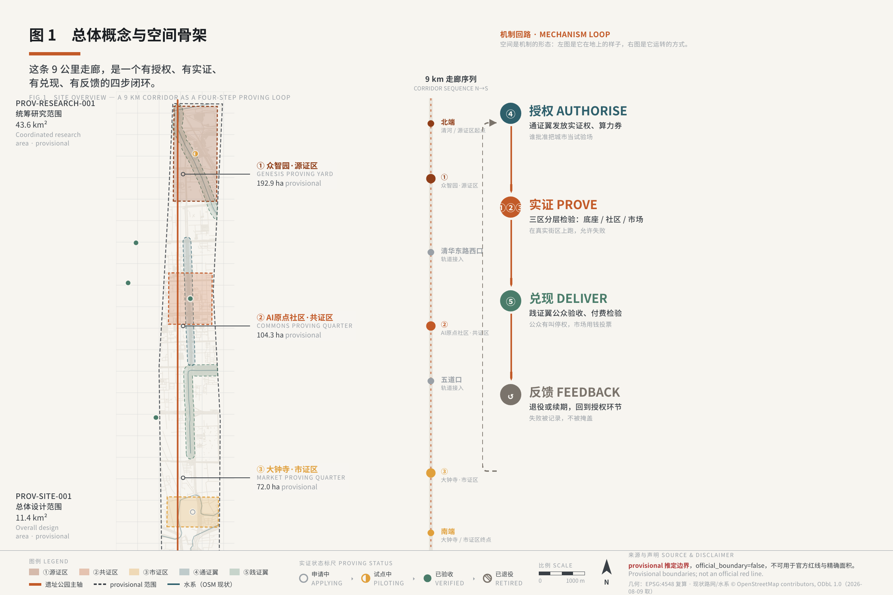
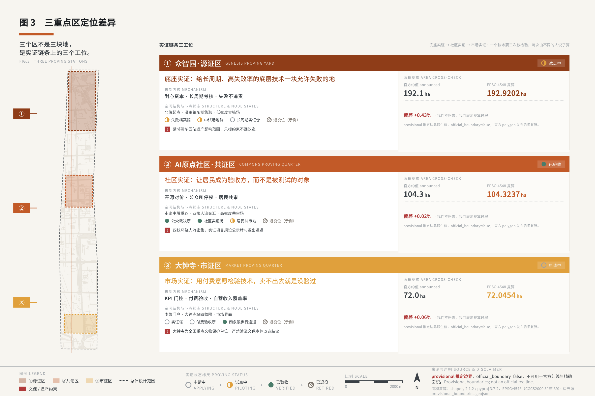
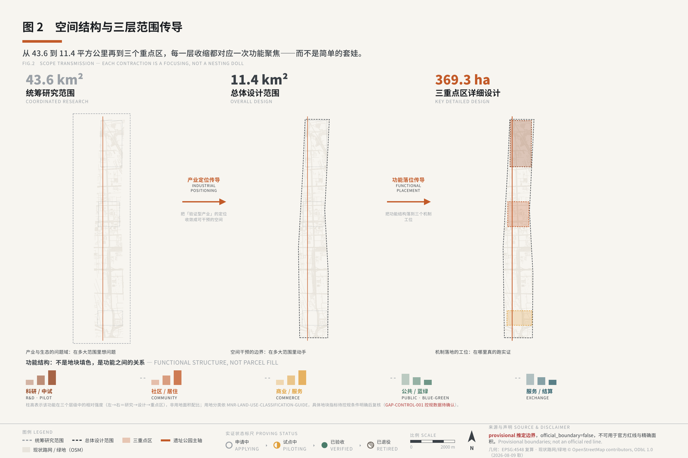
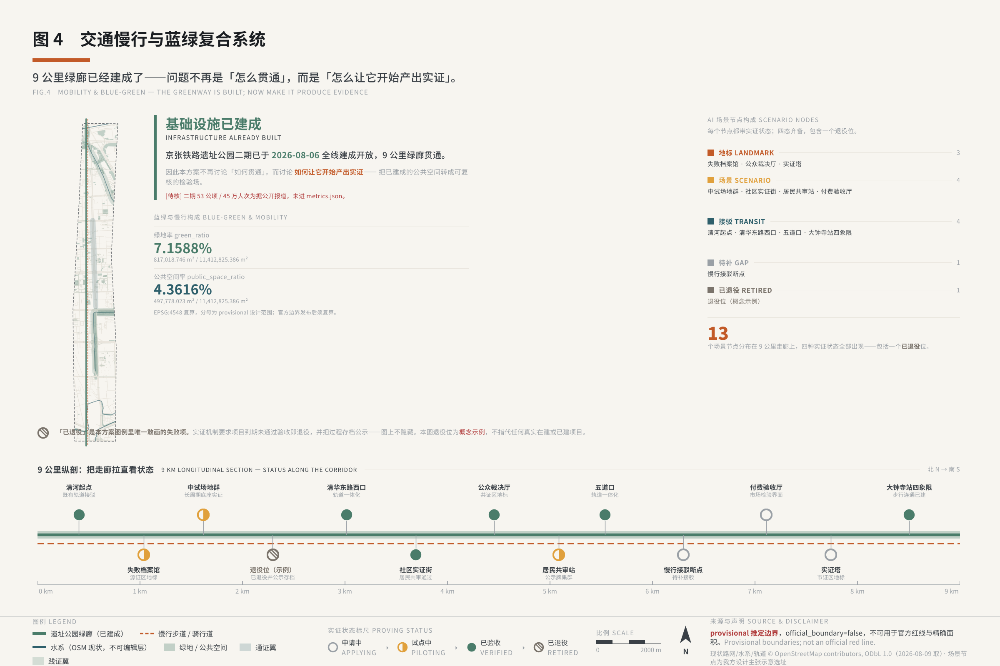
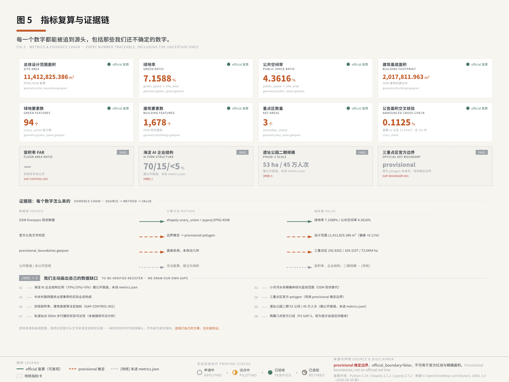

The Jingzhang Proving Belt
A proposal for the Centennial Jing-Zhang AI Innovation Belt built on one mechanism: the proving right. Scenario becomes an eighth configurable urban resource alongside land, space, industry, capital, talent, computing power and data. Three zones (Genesis, Commons, Market) host proving; two wings (Exchange, Practice) are promoted from layout accessories to institutional organs — 'Exchange' here denotes the intake and issuance window for proving rights, and carries no blockchain or digital-token meaning — and a four-step loop (authorise, prove, deliver, feed back) puts the public inside the governance circuit that renews or ends a proving right. All spatial and institutional statements are conceptual recommendations for professional teams to develop further.
The Jingzhang Proving Belt
The concept in one sentence: an innovation belt that turns the city itself into a public proving ground where AI can be applied for, tested, failed at, and withdrawn from. General compliance statement: every spatial, institutional, programmatic and narrative statement in this proposal is a conceptual recommendation and a reference scheme offered for professional teams to develop further. Nothing here constitutes a statutory planning conclusion, an official approval arrangement, an investment calculation, or a government commitment to implement. The text contains no floor area ratio, no building height, no demolish-renovate-retain conclusion, no road red line, no bridge, tunnel or underground engineering feasibility conclusion, no land tenure conclusion, and no non-public or personal data. Every statement involving money is written as an indicative capacity range plus stated assumptions plus a proposed mechanism.
---
Design Basis and Source List
This formal proposal takes the Pre-Qualification Announcement for the International Open Call for Urban Design of the Centennial Jing-Zhang AI Innovation Belt, issued by the Haidian Branch of the Beijing Municipal Commission of Planning and Natural Resources, as its primary basis 来源. Its machine-readable basis is the open co-creation agent taskbook 来源 together with the provisional boundaries, key areas, enumerations, metrics and source lists registered in brief/site-package/. Before generation, the following were read: design_brief.json, allowed_design_space.json, sources.json, enums/, ranges/, schemas/, data/source_registry.json and data/processed/agent_fact_pack.md; project_scope_summary.csv, agent_task_requirements.csv, source_use_matrix.csv and missing_data_checklist.csv were used to build the task, scope, source-use and gap inventories. Every design judgement can be decomposed into a traceable source, a recomputable metric, a verifiable layer and a human-reviewable assumption 深度. The announcement requires the work to reach two depth levels — Regulatory Detailed Planning and Integrated Planning Implementation Plan — so this narrative does not substitute for the GeoJSON layers, metric tables, A3 booklet, A0 boards and HTML presentation. The complete source and standard coverage is held in sources.json, standard_matrix.json and design_depth_matrix.json; the narrative does not duplicate the machine index.
Limits on the source registry 来源: data/source_registry.json records the use boundary for public, rights-cleared and provisional material. Material marked background_only or provisional_only is never promoted into an official boundary, a statutory regulatory plan, a formal scoring basis, or a government implementation commitment. data/processed/agent_fact_pack.md is a reading-navigation layer, not a new authoritative source 来源; factual judgements return to the registered primary material.
Where the proposal's judgement starts: the three positionings, five functions and Three Zones and Two Wings framework given by the organisers are fixed ground, not material to be replaced (see the next section). The core contribution of this proposal to that ground is to answer a question the official framework does not itself answer — on what basis, and by what means, does Haidian carry this framework? The judgement is that the resource Haidian is genuinely short of, and in which it is distinctively positioned by this combination of endowments, is not space but the proving right: the right to test artificial intelligence in a real city, lawfully, within stated limits, and under public scrutiny 来源. All six agent tasks grow from this single judgement; the mapping appears in each section and in the Six-Task Attachment Self-Check (the closing table before "References").

Until the official SITE_BOUNDARY and the three precise KEY_AREA red lines are released, this formal package is generated on provisional inferred boundaries 空间数据. Both geometry/site_boundary.geojson and geometry/key_areas.geojson carry provisional_constraint and official_boundary=false; they serve generation, self-check, visualisation and design discussion only, and are not official red lines, approval bases or statutory control conclusions. This organiser-side data gap does not by itself block content scoring 标准. Once official boundaries are published, the site boundary, key areas, land use, roads, green space, public space, buildings, phasing and metrics must all be recomputed, and the full render→finalize→self_check→preflight chain must be re-run rather than patched file by file.
---
Three-Level Scope Framework
The work is organised on the three levels set by the announcement. The Coordinated Research Area (approx. 43.6 km²) addresses the AI industrial ecosystem, strategic positioning, the innovation chain and future urban form. The Overall Design Area (approx. 11.4 km²) addresses urban renewal around the Jing-Zhang Railway Heritage Park, industrial space, transport and municipal support, and urban character control. The Key-Area Detailed Design Area (approx. 368.4 ha across three sites) must reach detailed design depth on programme mix, building scale, demolish-renovate-retain classification, public space connectivity and traffic organisation 深度. All three are mapped line by line in compliance_matrix.json, covering announcement items 1.3, 1.4 and 1.5 and every required task from agent.1 to agent.6.
The three levels are not three separate drawing sets; they are a chain of institutional transmission. The coordination level sets what Haidian carries and what it cedes in the regional division of labour. The overall level sets how the spatial structure — one spine, three zones, two wings, a four-step loop — is organised. The key-area level sets the institutional content and detailed design of each of the three districts. Any content that cannot find its basis one level up, or its landing point one level down, counts as a break in transmission 深度.
The overall spatial structure is one spine threading three zones, two wings opening east and west, four steps closing the loop. The Jing-Zhang Railway Heritage Park is the public-space spine; it opened along its full length on 6 August 2026, running 9 km across roughly 53 ha, according to public reports [to be verified] (not entered into metrics.json). The Genesis, Commons and Market Proving zones sit along that spine from north to south. The Exchange Wing and the Practice Wing extend east and west from existing urban elements. The four-step loop — authorise, prove, deliver, feed back — threads the five spatial units together. The three key areas overlap heavily in longitude (approx. 116.343–116.355) and separate from north to south in latitude, so the belt reads spatially as a linear corridor running north-south, on the order of one kilometre wide and nine kilometres long, closely matching the actual extent of the heritage park 空间数据.
| Level | Design question | The proposal's answer | Data landing point |
|---|---|---|---|
| Coordinated Research Area | How to organise the AI industrial ecosystem and regional coordination | The proving right is institutionalised as an eighth resource; four-corner regional coordination states plainly what Haidian cedes | compliance_matrix.json, standard_matrix.json |
| Overall Design Area | How the one-spine, three-zone, two-wing structure lands on drawings | A linear main corridor plus a string of wing service nodes and a linear waterway band | 空间数据, 空间数据 |
| Key-Area Detailed Design Area | How the three districts reach detailed design depth | Genesis Proving Yard (foundation-layer proving) / Commons Proving Quarter (community proving) / Market Proving Quarter (market proving) | 空间数据, 空间数据, 空间数据 |
---
Coordinated Research Area: Industry and Future City Research
Overall Concept and Naming System (agent.1)
The core concept: The Jingzhang Proving Belt — an innovation belt that turns the city itself into a public proving ground where AI can be applied for, tested, failed at, and withdrawn from. The conventional logic of an innovation belt is to supply space: zone the land, put up the buildings, recruit the tenants, write the subsidy cheque. In Haidian that logic has hit diminishing returns, because Zhongguancun Software Park, Xi'erqi and Chaoyang are all doing the same thing. This proposal holds that the resource Haidian is genuinely short of, and in which it is distinctively positioned by this combination of endowments, is not space but the proving right — the right to test AI in a real urban environment, lawfully, within stated limits, and under public scrutiny. The judgement rests on two diagnosed breaks in the industrial chain: the barrier to scenario validation is high (AI companies cannot find real urban scenarios in which to complete technical validation), and patient capital is scarce (infrastructure-type projects return over 7 to 10 years, which gives commercial capital little reason to enter). Against those breaks, Haidian holds zero-distance proximity to Tsinghua University, Peking University and the Chinese Academy of Sciences, 92 key laboratories, RMB 405.31 billion in technology contract turnover, and the density of real everyday-life scenarios that comes with 3.111 million permanent residents 来源.
What makes proving different from experimenting is precise, and it runs on four contrasts. In the relationship between parties, the city sets the question and accepts the result; it is not the company's laboratory. In the handling of outcomes, failures are archived too, and are equally public assets. In the design of the endgame, there is an exit: fall short and the right is withdrawn. In the position of the public, people are an informed counterparty who can query and appeal, not a passive test population. The concept and the economic mechanism are of one piece rather than bolted together: KPI gating corresponds to gating the proving right; patient capital corresponds to a proving ground where failure is permitted and the failure archive is a public asset; strengthening the open-source ecosystem corresponds to a mandatory return of proving results to the public knowledge base; and the government's three restraints — not operating directly, not specifying technology, not promising returns — correspond to a city that issues proving rights and sets boundaries, and does nothing else.
The naming system follows one principle: name the behaviour, not the form. It extends across four levels. The parent brand is The Jingzhang Proving Belt. The sub-districts are Zhongzhiyuan · Genesis Proving Yard (foundation-layer proving), AI Origin Community · Commons Proving Quarter (community-level proving), Dazhongsi · Market Proving Quarter (market proving), Zhongguancun Technology Services Wing · Exchange Wing (resource circulation and capital enablement), and Xiaoyue River Scenario Enablement Wing · Practice Wing (scenario delivery and public acceptance). The scenario level uses "proving project PG-<zone code>-<number>". The programme level uses Proving Week, Opening Day and the Retirement Rite. The institutional definition of the Exchange Wing, stated here at first mention and required reading: in this proposal the Chinese term takes its literal sense of circulation and verification — resources complete their application, review, issuance, settlement and exit here, and this is where a proving right is verified and granted. It has nothing to do with blockchain tokens, cryptocurrency or token economics. This proposal involves no digital assets, no token issuance and no on-chain rights design, and the English name deliberately avoids the word Token.
Visual identity and logo direction (a layered statement): this section supplies only the construction logic for the belt's overall brand mark, not a finished mark. It is strictly separated from the wayfinding sign system in the cultural narrative section — the logo system governs how the belt is recognised as a single brand; the wayfinding system governs how a person finds their way inside the belt and learns what is happening underfoot. Three design-language principles apply: the mark expresses a state rather than a form (the motif is taken from the states of the proving process, not from spatial shape); a variable system beats a fixed graphic (a constant skeleton plus scenario variables, covering everything from parent brand to project level); and it works in black and white first, at extreme scales. The recommended motif is the three states of a railway signal — proceed, caution, stop — corresponding to the lifecycle states of a proving project. The reasoning is that this is structurally identical to the proposal's core mechanism (an operating permission that can be granted, held, or withdrawn), and that it steps away from rails and spikes, form elements already crowded by comparable schemes.
Three Positionings, Five Functions, and the Three-Zone Two-Wing Coordination Loop
This proposal inherits the official framework in full and replaces none of it: the three positionings (Centennial Jing-Zhang cultural belt / metropolitan AI living-experience belt / AI convergence innovation belt), the five functions (Full-Stack Independent AI Innovation System / world-class AI innovation ecosystem / a new paradigm of AI-enabled scenarios / an intelligent and vital AI city / global standing in AI governance), and the Three Zones and Two Wings (Zhongzhiyuan AI Independent Innovation Acceleration Area / Beijing AI Origin Community / Dazhongsi AI Industry Cluster, plus the Zhongguancun Technology Services Wing and the Xiaoyue River Scenario Enablement Wing). The three positionings are not parallel labels; they are three faces of one thing. The cultural belt answers why here (historical legitimacy). The experience belt answers who accepts the result (the acceptance end, with the public as counterparty). The innovation belt answers what is being verified (the point of occurrence).
The core argument about the spatial skeleton is this: the main belt carries what gets proved, and the wings carry what makes proving possible. The three zones are where proving happens; the wings are the spatial carriers of the authorisation and settlement machinery. Without the wings, a proving right is a piece of paper. With them, it has an application window, a settlement channel and a place to land. That promotes the wings from layout elements to institutional organs:
| Spatial unit | Name | Institutional role | Positioning in one line |
|---|---|---|---|
| Zhongzhiyuan AI Independent Innovation Acceleration Area | Genesis Proving Yard | Foundation-layer proving | Test the foundations here; failure is allowed |
| Beijing AI Origin Community | Commons Proving Quarter | Community-level proving | Test everyday services here; residents review alongside |
| Dazhongsi AI Industry Cluster | Market Proving Quarter | Market proving | Face the test of willingness to pay here |
| Zhongguancun Technology Services Wing | Exchange Wing | Authorisation and settlement | Collect the proving right, compute vouchers, capital and IP services here |
| Xiaoyue River Scenario Enablement Wing | Practice Wing | Delivery and public acceptance | Let the public use it, see it, judge it, and stop it here |
The coordination loop (a required agent.1 deliverable) is a four-step circuit with feedback control, not a one-way flowchart. Step one, authorise: the Exchange Wing receives and reviews applications, issues the proving right and the accompanying computing vouchers, data sandbox and scenario APIs. Step two, prove: the three zones test in tiers — failure permitted in the Genesis Yard, joint resident review in the Commons Quarter, paid acceptance in the Market Quarter. Step three, deliver: the Practice Wing puts the result in front of the public, who actually use it and judge it. Step four, feed back: public judgement and appeals return to the Exchange Wing and act directly on whether the proving right is renewed or withdrawn. Only the fourth step carries reverse force. A system with only the first three steps is an issuing system; add the fourth and it becomes a governance system. The Exchange Wing sits to the west, on the existing service-industry concentration along Zhongguancun Street and Xueyuan Road; the Practice Wing sits to the east, on the open public space of the Xiaoyue River. West and east together stretch the north-south linear belt sideways, answering the east-west stitching required by the concept strategy 空间数据.
Regional Innovation Coordination (regional_synergy, agent.2)
Coordination is not a list of intentions to cooperate. It is a statement of what Haidian carries and what it cedes in the regional division of labour. The test: if a coordination arrangement cannot say what Haidian gives up, it is not coordination — it is expansion.
Within the district, answering north and south first: the Zhongguancun AI North Latitude Community opened on Xibeiwang East Road in Haidian on 10 July 2025 and, according to public reports, forms the northern wing of Haidian's "one south, one north" AI map, with a 10,000P+ intelligent computing platform and rent relief of up to three years. It solves the question of whether AI companies can survive — a cost question. The Jingzhang Proving Belt solves whether AI technology can be verified and trusted — a trust question. The two are complementary rather than overlapping: graduates incubated in the north come south to apply for proving rights (the forward link); the Belt's scenario demand list becomes a targeting list for the north's recruitment (the reverse link); and computing resources should be connected rather than duplicated, since inclusive computing provision is already carried by the northern wing ([to be verified] — the specific form of connection must be negotiated between the competent authorities and the operating entity).
Across districts, the four-corner relationship: with Future Science City, Haidian carries AI foundation models and open-source toolchains and cedes energy and life-science vertical applications. With Huairou Science City, Haidian carries AI-assisted research tools and cedes large scientific facility construction. With Beijing E-Town, Haidian carries embodied-intelligence algorithms and simulation platforms and cedes robot hardware manufacturing (an "R&D in Haidian, manufacturing in E-Town" consortium model). Across the wider Beijing-Tianjin-Hebei region, Haidian exports urban AI governance models; Xiong'an supplies greenfield construction scenarios that contrast with Haidian's brownfield renewal scenarios in paired proving; and Tianjin complements it in port and logistics AI. All of the above are conceptual recommendations subject to confirmation by the relevant competent authorities, and are not stated as settled inter-governmental arrangements.
Full-Stack Independent Innovation and the Global AI Innovation Ecosystem (agent.2)
Six global cases (covering four governance types — greenfield new town, brownfield renewal on railway land, cross-border coordination, and purely private incubation — selected for the transferability of their mechanisms rather than for fame):
| Case | Which Haidian mechanism question it answers | The one transferable move | Why Haidian is different |
|---|---|---|---|
| one-north, Singapore | Should government be referee and player at once | Separation of planning, land and investment-promotion powers | Haidian's brownfield land rights are fragmented; there is no clean-site condition |
| Kendall Square, USA | How does university knowledge enter urban space | The university applies for rezoning in its own right as a property owner | 26.2% vacancy in Q2 2025 is direct counter-evidence to "build and they will come" |
| King's Cross, London | Should computing infrastructure come before or after recruitment | High-capacity fibre and a dedicated substation laid before industry recruitment | Its magnet depended on the contingency of a single corporate headquarters; Haidian's magnet is sustained research density across four institutions, and does not bet on a headquarters |
| Hetao, Shenzhen | How to break institutional friction in resource flow | The whitelist as a de-administratised project-approval method | Its institutional differential comes from "one country, two systems", a variable Haidian does not have; only the method transfers |
| Station F, Paris | Can investment promotion be outsourced | Programme-based outsourced recruitment — companies incubating companies — with visibility replacing subsidy | A pure elimination funnel that carries no basic-research role, out of step with Haidian's research-driven positioning |
| Kashiwa-no-ha, Japan | Who coordinates when government does not lead | A public-private-academic governance body in which government is one partner among several | A purely greenfield new town, with no brownfield tenure or incumbent community interests to balance |
(Hard figures for these cases come from public reporting or official statements, and some are third-party compiled estimates. Qualifiers are carried in the text, and these figures are barred from metrics.json — see "Risk, Copyright, and Compliance".)
Case-by-case mechanism analysis (selected for transferability, not fame; each case must answer a specific mechanism question Haidian currently faces):
① one-north, Singapore — separated powers and "white site" flexible zoning. JTC, a statutory board, acts as sole landlord and developer, and uses a "business park white site" planning instrument that grants discretion over use, avoiding the rigidity of single-use zoning when industry changes faster than planning cycles. Planning authority sits with the Urban Redevelopment Authority, land development execution with JTC, and industry recruitment with the Economic Development Board — powers separated but coordinated, so that a deeply involved government still avoids being referee and player through internal division. In scale it covers 200 hectares and, according to public reports, gathers more than 1,300 start-ups and around 50,000 knowledge workers (relayed via a property agency blog, not official statistics; not entered into metrics.json). Why Haidian is different: one-north was built from flat ground, Haidian is brownfield renewal, and the cost of reassembling land rights differs by orders of magnitude. What transfers is the checks-and-balances thinking behind separated powers, and the pricing move of lowering barriers through property or leasehold terms rather than cash subsidy.
② Kendall Square, USA — the functional interface for university participation in innovation-district governance, and vacancy as counter-evidence. The historical starting point was state coercion (the 1949 Housing Act granted powers to designate blighted areas and to expropriate), but the second track is the one worth studying: on its own property in Kendall Square, separate from the expropriated parcels, MIT files rezoning applications directly with the Cambridge planning board, supported by a three-tier incubation chain from shared wet labs to deep-tech accelerators. What Kendall Square offers this proposal is not a property-rights model — private ownership and zoning autonomy in the United States have no equivalent environment in China and do not constitute a transferable path — but a functional relationship: a university's knowledge assets need a commercialisation interface immediately adjacent to campus yet outside campus administration, and the Commons Proving Quarter answers exactly that functional need, asserting and involving no adjustment to university land tenure or land use. The counter-evidence that must go into this proposal: office vacancy in the district reached 26.2% in the second quarter of 2025, more than twice the historical average, showing that even the most innovative square mile in the world is not immune to cyclical oversupply in commercial property. That is direct counter-evidence to the narrative that an AI boom makes real estate permanently scarce, and on that basis this proposal rejects the logic of building first, recruiting second, and calling a full building success. Why Haidian is different: the expropriation regime has no Chinese equivalent, but the second point — a university participating in spatial governance directly, as a property owner — is something Haidian is equipped to do and has long left unused. The Commons Proving Quarter is the response to exactly that.
③ King's Cross, London — railway-land renewal with computing infrastructure first. Of the six cases this is the closest to Jing-Zhang in spatial DNA, built on railway goods yards around King's Cross station. Two hard lessons stand out. The first is a basic-research anchor arriving first: the Francis Crick Institute landed early, after which private developers expanded laboratory supply — research anchor first, capital following. The second is computing infrastructure laid ahead of demand: large-scale underground fibre and a dedicated substation made it one of the few areas in London able to support training-scale loads. On the results side, more than 100 institutions are present, the district economy is around GBP 35 billion, and Google's headquarters for 7,000 staff together with DeepMind forms a clustering magnet. Why Haidian is different: the King's Cross magnet was a bet that came off, dependent on the contingency of Google's headquarters investment. Haidian does not need to bet — research density across four institutions plus forty years of Zhongguancun commercialisation experience is already a sustained magnet, and computing investment should follow the projects, not the recruitment forecast.
④ Hetao, Shenzhen — institutional innovation as a method. The Futian Bonded Area established three whitelists (industries, institutions, individuals) with separated "first line" and "second line" management; whitelisted researchers cross between Shenzhen and Hong Kong through a dedicated channel; the "Ke Hui Tong" pilot addressed cross-border foreign exchange difficulties; and a call-for-problems commissioning system began in 2022. The cooperation zone covers about 3.89 km², with 8 to 10 Fortune 500 R&D centres and more than 400 technology companies. Why Haidian is different: Hetao's core dividend rests on the institutional differential between two separate customs territories under "one country, two systems", a variable Haidian entirely lacks. What can be taken is the method — when a physical border cannot generate a differential, can a rule-based border create one? This proposal's answer is the proving right itself, which functionally plays the role of Hetao's whitelist, with the basis for inclusion changed from cross-border status to proving eligibility.
⑤ Station F, Paris — outsourced recruitment and visibility instead of subsidy. Privately funded conversion of a disused railway freight depot, with no government lead. Two inventions are worth taking directly. The first is programme-based admission in which companies incubate companies: recruitment authority is outsourced to firms and institutions, while management supplies only the physical space and the matching rules. The second is the "Future 40" visibility mechanism in place of cash subsidy, with roughly the top 4% of performers selected annually for high exposure. It covers around 50,000 m² and, on third-party compiled estimates, has seen cumulative funding in the several-billion-euro range and a five-year survival rate of about 92.4% (not officially audited; the basis of the estimate shifts over time, so no precise figure is cited, and it is not entered into metrics.json). Why Haidian is different: Station F is a pure elimination funnel that carries no basic-research role, out of step with Haidian's research-driven positioning. But "visibility instead of subsidy" has a stronger version here — the honour is not making a top-forty list, it is that your proving project passed public acceptance, a credential that cannot be bought and cannot be arranged in advance.
⑥ Kashiwa-no-ha, Japan — public-private-academic coordination over a long horizon. Coordinated by the Urban Design Center Kashiwa-no-ha (UDCK), composed of academia (the University of Tokyo and others), the public sector (Kashiwa City, Chiba Prefecture) and private parties (the chamber of commerce and property companies), with Mitsui Fudosan participating as a co-operator rather than sole developer and government as one partner among several. The project began in 2005 with a planning horizon to 2030, and received Japan's first LEED-ND Platinum certification. Why Haidian is different: Kashiwa-no-ha is a purely greenfield new town without the complexity of existing tenure and incumbent community interests. But its organisational form has direct value here — the Commons Proving Quarter is the only unit on the belt where residents and developers share the ground, and it needs a public-private-academic body of this kind. The Haidian version must add one more party: genuine representatives of permanent residents, because what this proposal is doing is neighbourhood acceptance, not industrial coordination.
Synthesis across the six cases (nothing copied; each item carries a stated reason for the rewrite): on governance bodies, take Kashiwa-no-ha's public-private-academic coordination but add resident representatives. On the division of powers, take one-north's separation, which here becomes a three-way split between the power to issue, the power to prove and the power to accept. On the spatial starting point, take King's Cross's railway-land renewal and infrastructure-first move, but change computing investment from betting on a headquarters to following the projects. On university participation, take Kendall Square's independent track, and write its vacancy counter-evidence into a contingency plan. On institutional leverage, take Hetao's whitelist method, replacing a cross-border differential with a proving-eligibility differential. On incentive design, take Station F's visibility-instead-of-subsidy, replacing a top-forty list with passing public acceptance.
The AI innovation ecosystem map is organised in five stages along the proving chain, in contrast to the conventional drawing that simply links actors: initiation (who proposes what should be tested) → authorisation (the Exchange Wing receives the application, runs ethics and privacy pre-review, and issues the proving right) → proving (tiered testing across the three zones, Genesis → Commons → Market) → delivery (the Practice Wing, facing the public) → settlement (back to the Exchange Wing for renewal, expansion, reduction, withdrawal or transition to normal operation, with the outcome entered in the proving performance record).
Eight categories of resource (land, space, industry, capital, talent, computing power, data, scenario — the taskbook requires each to be answered): the first seven share one characteristic, in that they are all problems of allocating an existing stock — how much the city has, and who gets it. The eighth, scenario, is the one this proposal argues is distinctively Haidian's — it is not stock allocation but a right the city actively creates, which raises three further questions of admission, term and exit. Each category below states how it is supplied, how it is priced, and where the boundary of the government's role lies. All capital-related statements are indicative capacity ranges and proposed mechanisms; none is an investment calculation or a fiscal commitment:
| Resource | Supply mechanism | Pricing mechanism | Boundary of the government's role |
|---|---|---|---|
| Land | Brownfield renewal first; new construction land is not the main supply route. The three key areas total approx. 368.4 ha (provisional); this proposal depends on land quantity far less than a conventional park model | Differentiated land conditions for proving-related functions (open laboratories, the failure archive, public experience routes) versus conventional industrial functions, the former holding public duties and therefore meeting looser conditions. Specific land conditions, disposal method and land pricing are statutory approval matters, and no conclusion is offered here | Does not enter primary land development directly. Any change to land-use classification must comply with territorial spatial planning and land-use classification standards and follow statutory procedure |
| Space | Three tiers: incubation space (the Origin Incubator, research land category, on the order of 12 ha, a proposed mechanism); shared facilities (developers' walk, open laboratories, shared computing nodes, free or low-cost); and market-allocated industrial space | Staged rent support (a proportion of rent subsidised for start-ups in the first three years); talent housing at no less than 20% with rents held to a discount on market rates (a proposed mechanism; specific standards subject to statutory procedure); following one-north in substituting property and leasehold terms for cash subsidy — cash subsidy disperses the moment it stops, whereas the stickiness of low-cost space comes from relocation cost itself | Provide the space and the supporting policy, with operation left to professional teams (a state-owned platform taking the operator role requires statutory establishment). Contingency plan (the direct application of Kendall Square's 26.2% vacancy counter-evidence): release space in batches following actual proving-project take-up, and reduce the second phase if occupancy falls short |
| Industry | Not a contest of company numbers but of irreplaceability. Three indicative (not quota) categories: AI infrastructure around 30%, urban AI applications around 50%, open-source ecosystem around 20% — the infrastructure share being a structural correction to Haidian's current level of roughly 15% (per public industry observation) | What each category finds irreplaceable here: infrastructure firms get zero-distance research access across four institutions, priority computing scheduling and a permanent home for open-source community events; application firms get a real everyday-services proving ground (a city interface of 3.111 million residents) and first-order opportunities in government service procurement; open-source players get a permanent place in the honour display system and eligibility for the shared-equity pilot | Publish demand lists and open rules; do not specify technology routes or suppliers, and avoid endorsing any particular technology route |
| Capital | Five channels, each with its own trigger and stated assumptions: ① fiscal guidance funding (infrastructure, public services, heritage protection, phased and tied to KPIs); ② a proposal for the coordinated use of area-wide renewal proceeds (post-renewal land value gains brought into an area-wide balance; the specific route is a statutory approval matter, and no conclusive recommendation is offered here); ③ private capital and concession arrangements (principally a user-pays concession model under the new PPP framework, with operating performance as a factor adjusting returns); ④ state-owned platform injection (requires statutory establishment); ⑤ patient capital and industry funds (focused on foundations and open source, 7-10 year horizon, exploring a due-diligence exemption mechanism aligned with the assessment of state asset preservation and appreciation) | KPI gating — money is released against results achieved, not against a calendar. Phase one (suggested 3 years) releases phase-two funding only when industrial, everyday-services and financial conditions are all met; any one falling below 80% of target triggers an exit review. Phase two (suggested 4 years) requires self-generated revenue coverage before phase three. Phase three (suggested 7 years) holds annual fiscal support within a ceiling | No return is promised; industry funds and concession projects bear their own risk. Patient capital is the single exception — a due-diligence exemption mechanism is to be explored for infrastructure-type projects, with the specific criteria and limits of application to be established separately through statutory procedure, so that it is not read as a general guarantee |
| Talent | Three channels: activating the existing base (lowering the institutional cost for researchers at the four institutions to take part in proving, by giving universities a proving and commercialisation interface immediately adjacent to campus but outside campus administration, asserting and involving no adjustment to university land tenure or land use); a developer channel (open-source community, standing events and a contribution display system that attract recurring presence rather than only permanent registration); and a housing channel (talent housing and rent support) | Cash subsidy is not the main instrument (the Station F lesson: visibility and credit are harder to replicate than cash). The core return is the record — which proving projects you took part in, whether they passed public acceptance, and whether the record is publicly searchable — meshing directly with the honour display system and the conversion funnel | Guarantee public services and housing support; stay out of specific talent evaluation and selection — the proving performance record arises naturally from proving results |
| Computing power | Three tiers: a public computing pool (guaranteed capacity); computing vouchers (offsetting commercial computing costs, with an annual ceiling); and market-rate computing. The scale of the public pool depends on municipal capacity verification (GAP-MUNICIPAL-001, to be confirmed), and no figure is given here | Tiered scheduling plus voucher subsidy: public-interest research takes priority, commercial training pays market rates; vouchers are redeemable and traceable | The divergence from King's Cross's "computing before recruitment": here computing investment follows the projects rather than the forecast, expanding in batches against actual proving demand and bound to KPI gating. The reason is that Haidian's magnet — research density across four institutions plus forty years of Zhongguancun commercialisation — already exists and needs no bet on a headquarters. Government provides voucher subsidy only, and does not operate computing centres |
| Data | Three closed paths: a public data space (open de-identified datasets); a data sandbox (data stays in place, the model leaves, the raw data does not); and a data return mechanism (anonymised inference results flow back, closing the loop of out, back, thicker, and more useful to the next cohort) | Not priced in money but in consideration — what a company gives for public data is a return obligation and a compliance undertaking, not a fee. A consideration mechanism protects public value better than a price mechanism | Responsible for de-identification standards and ethics committee review; no participation in commercial data trading — the government should not be rule-maker and market participant at once |
| Scenario (the eighth, and the headline of this proposal) | A proving right consists of six elements, all required: a defined extent (spatial boundary, served population, data collection range); a defined term (banded by project type; the single authoritative statement is the proving-term band table below); public visibility (the eight fields on the proving notice board); human review points; consideration obligations (data return, open-sourcing of the toolchain, ethics review); and revocability | Not priced in money. Three forms of consideration are combined by project type: foundation-layer work in the Genesis Yard must open-source, return evaluation data and pass standards review; everyday-services applications in the Commons Quarter should open-source, return anonymised inference results, and face enhanced review plus neighbourhood acceptance; commercial applications in the Market Quarter should open-source, return anonymised aggregate statistics and pass standards review. The more public value a project occupies, the heavier the consideration | Government does exactly three things: open scenario interfaces, set ethical boundaries, and execute revocation. It does exactly three things not: no specifying technology routes or suppliers, no endorsing proving results, and no promising commercial returns |
The proving-term band table (the authoritative statement of term throughout this text, mapped on two axes — project type and spatial unit):
| Project type | Spatial unit | Suggested term | Reasoning |
|---|---|---|---|
| Foundation and toolchain | Genesis Proving Yard (Zhongzhiyuan) | 12-24 months, with an initial authorisation of no less than 12 months | Carries patient capital's long horizon; a failure signal at the foundation layer takes time to separate from noise, so a failed mid-term assessment reduces scope for one cycle of observation rather than triggering immediate termination |
| Community and everyday services | Commons Proving Quarter (AI Origin Community) | 6-12 months | It touches residents' daily lives, so the term should not run long, and it matches the rhythm of neighbourhood acceptance |
| Market and consumer | Market Proving Quarter (Dazhongsi) | 12 months | Matches the market cycle for testing willingness to pay |
Reapplication is required on expiry; an open-ended pilot occupies public resources indefinitely and faces no pressure to exit.
The legal nature of the proving right (required reading; every reference to the proving right in this text is governed by this characterisation): the proving right is not a newly created administrative licence. Its legal nature is a conditional, time-bound authorisation to use urban public space and public data resources, established through an Urban Proving Cooperation Agreement signed between the proving party and the operating body, and constituting a civil contract relationship. Where statutory approvals under existing law are engaged (occupation of public roads, temporary construction, cross-border data transfer, special equipment and the like), the proving party must still obtain those approvals separately under current rules; the proving right does not replace or waive any statutory approval. What is called revocation is termination of an agreement when the contractually agreed conditions are met, not an administrative penalty; the three-part A/B/C structure below is the agreed procedure for terminating an agreement, not an administrative penalty procedure. This characterisation is set out deliberately: a district-level government has no power to create administrative licences (Article 15 of the Administrative Licensing Law withholds that power from governments at and below the level of a districted city), so if the proving right were understood as the creation of an administrative licence, the legal ground beneath the mechanism would not hold. Characterised as a civil contract authorisation, the mechanism becomes a city handing over existing resources on conditions by contract, which is fully consistent with the government's three restraints in this proposal (not operating directly, not specifying technology, not promising returns), and it changes none of the admission, term or exit arrangements already designed.
Operable clauses for termination (an expansion of the sixth element; most schemes write "an exit mechanism will be established" and never say how, so this one gives triggers, procedure and consequences in three parts). A. Circumstances that trigger a termination review (any one suffices): the project exceeds the spatial extent, population or data collection range declared in its application; an undeclared data use or a flow to an undeclared third party occurs; fully automated decision-making appears at a step that requires a human review point; published information does not match actual operation; a public appeal receives no substantive response within the set period and is upheld on review; the mid-term assessment misses the verification goal stated in the application (with the failure waiver applying to exploratory projects in the Genesis Yard); or consideration obligations are not met on time. B. The termination procedure, in three steps that cannot be skipped (this is the agreed contractual termination procedure, not an administrative penalty procedure): notice and representation (the proving party may submit a written statement and remediation plan within the set period) → independent review (by the ethics committee together with public representatives) → ruling and publication (renew, reduce scope, suspend or terminate, with the outcome and the reasons published together). C. Consequences, graded: reduction of scope (where the problem is locally contained); suspension (where the problem can be remedied); termination (ending the proving right agreement, applying to the first three serious circumstances or to failed remediation); and a performance record (entered in every case, except where the exploratory failure waiver applies; the nature of this record and the limits on its use are explained in the privacy boundary part of "AI Innovation Ecosystem, Personas, and AI+ Scenarios").
Ecosystem design across the three spatial units. Zhongzhiyuan / Genesis Proving Yard offers the AI foundation layer a long-horizon, high-tolerance proving ground where failure is permitted, with three operable clauses: a failure waiver (an exploratory project that misses its target incurs no negative record, provided process data has returned to the public knowledge base); a long-horizon clause (an initial term of no less than 24 months, and a failed mid-term assessment reduces scope for one cycle of observation rather than triggering immediate revocation); and an open-source consideration clause (the application must state the timing, licence and maintenance commitment of the toolchain open-source plan). AI Origin Community / Commons Proving Quarter is the only unit on the belt where residents and developers share the ground, and it must pass both technical acceptance and neighbourhood acceptance, with three tiers of layered consent — the co-building tier (opt in, authorise collection within an agreed range, withdraw at any time with deletion within 30 days), the co-present tier (daily life overlapping the proving space, limited to non-identifiable aggregate statistics, with the right to apply for a space to be removed from the proving extent), and the bystander tier (brief presence, no collection, with proving installations required to carry clear physical boundary markings). Dazhongsi / Market Proving Quarter is the last gate before the market, testing willingness to pay rather than subsidy, and serves as the proving ground for the self-generated revenue coverage test inside KPI gating — the converter from public subsidy to market self-sufficiency.
---
Overall Design Area: Urban Renewal and Regulatory-Plan-Level Urban Design
The Overall Design Area must reach urban design depth at the Regulatory Detailed Planning level, setting out the overall spatial structure of urban renewal, the renewal project list, implementation policy recommendations and an integrated carrying-capacity assessment 标准. geometry/land_use.geojson covers the design boundary completely without overlaps, geometry/buildings.geojson expresses building footprints, geometry/roads.geojson expresses micro-circulation, walking and cycling, and rail interchange relationships, and metrics.json recomputes core areas, ratios and layer counts 深度 深度.
From zero geometry to institutional carriers: the two wings, and the main line of attack here. The official framework names the wings and their functions but gives no geometry, and entrants across the field generally leave them with no geometric coverage, because drawing them requires finding the spatial carrier yourself. The approach here is not to invent enclosed parcels but to express the wings as node systems distributed along existing urban elements. The Exchange Wing is proposed along the Zhongguancun Street–Xueyuan Road axis, using the existing OSM road network as its base, as a linear string of service nodes rather than a closed polygon, because a real service wing is distributed; each node carries a proving-right intake point, a computing-voucher redemption point, and IP and capital services. The Practice Wing follows the actual course of the Xiaoyue River (OSM waterway pulled via Overpass) as a linear band along the water plus nodes, sitting east against the Exchange Wing to the west. Both wings use AI_SERVICE_ZONE (editable_by_agent: true) and must never be written into the KEY_AREA layer. WATER_SYSTEM is a non-editable layer; existing watercourses may be referenced but no new blue line may be created 空间数据.
On building scale, land-use intensity and demolish-renovate-retain, the regulatory conditions (floor area ratio, height, coverage, green ratio, setbacks) are missing (GAP-CONTROL-001), so this proposal draws no intensity conclusions of any kind and marks the relevant metrics in metrics.json as unknown or pending_control 深度 深度.
On transport, rail and municipal infrastructure, the focus is the three station-integration interfaces named in the announcement — Wudaokou station and Qinghua East Road West station (Commons Quarter) and Dazhongsi station (Market Quarter, including four-quadrant pedestrian connectivity at the intersection) 深度. Municipal and public service facilities should cover AI industry service facilities, innovation service platforms, distributed energy and edge computing integration. Where pipeline, energy, flood control and fire safety information is missing, these are listed as prerequisites for formal development rather than stated as approval conditions 深度.
Innovative thinking on territorial spatial planning (the fifth required agent.1 answer; four recommendations, all offered as planning research suggestions and none as a proposed change to the current statutory system). First, without altering land-use designation, explore a path for time-limited management of temporary facilities — that is, within the existing framework for managing temporary construction and temporary land use, provide approval facilitation for the temporary facilities supporting proving projects, with a defined term and a defined exit, involving no adjustment to land-use designation or planning conditions. Second, make failure cases a formal part of planning assessment, recording retired projects and failed cases as formal assessment content. Third, connect public feedback into the formal implementation-assessment circuit. Fourth, supplement conventional land-use layers with a "mechanism layer", studying the addition of layers that express proving-right authorisation relationships, resource circulation paths and public feedback collection paths.
Implementation prerequisites and the tenure coordination path: the three key areas are brownfield renewal areas involving at least four categories of ownership and use-right holders (university research land, ministry or military land, common parts held jointly by residents of existing communities, and municipal and collective land). This proposal does not pretend to expertise it lacks. The complexity of tenure coordination, the boundaries of military and other specially administered land, and the owner decision-making procedures for jointly held common parts (where matters requiring joint owner decision under Article 278 of the Civil Code are engaged, the corresponding voting procedure must be followed) are listed as the foremost prerequisites for the formal development stage and registered as GAP-TENURE-001. The specific coordination path, the boundaries of each party's rights and duties, and the negotiation mechanism must be developed separately at the deepening stage with the natural resources, housing and construction, and local subdistrict authorities. This proposal draws no conclusive judgement and offers no ready-made scheme for disposing of property rights. Indicative directions for a categorised negotiation framework: research land (connecting to the channel for activating the existing base across the four institutions, see the talent resource mechanism); ministry and specially administered land (strictly observing existing ownership and use restrictions, with the scope of proving-right authorisation not extending to land of this kind); jointly held common parts (placed on the community agenda of the public-private-academic governance body, and brought into Commons Quarter spatial arrangements only after the statutory voting procedure has been completed); and municipal and collective land (handled separately under current rules on requisition, conversion and the market entry of collective construction land).
Space-industry integration: by institutionalising scenario as an eighth configurable resource, the relationship between industry and space shifts from companies renting space to companies applying to use the city. That is also why the wings must be institutional organs rather than layout accessories — the Exchange Wing is the allocation window for this resource, and the Practice Wing is its acceptance end.
---
Detailed Design of Key Areas
Detailed design of the three key areas is mandatory and must reference 空间数据, 空间数据 and 空间数据, with 深度 checking whether Integrated Planning Implementation Plan depth is reached. The three areas overlap heavily in longitude and separate north to south in latitude, and their scale, location and institutional role are mutually consistent. Zhongzhiyuan in the north is the largest (approx. 192.9 ha, furthest from the urban core) and suits long-horizon, high-tolerance foundation proving. The AI Origin Community in the middle (approx. 104.3 ha, ringed by four institutions, with the highest population and knowledge density) suits community-level proving with resident participation. Dazhongsi in the south is the smallest (approx. 72.0 ha, closest to the urban core and the most commercial) and suits market proving. Note on figures: the three areas listed separately sum to approximately 369.2 ha, a deviation of about 0.2% from the announced figure for the Key-Area Detailed Design Area (approx. 368.4 ha) cited earlier. The 368.4 ha figure is the announced basis; 369.2 ha is this proposal's recomputed total from self-drawn boundaries on EPSG:4548. The deviation falls within surveying tolerance. The text uses the announced figure as its primary reference, and the recomputed figure is for cross-verification only.

| Key area | Design positioning | Spatial moves | AI industry and operating scenarios | Evidence |
|---|---|---|---|---|
| Zhongzhiyuan AI Independent Innovation Acceleration Area (Genesis Proving Yard) | A garden-type full-stack independent innovation district, the only district on the belt where failure is permitted without penalty | Strengthen the Qing River frontage; integrated design of buildings, green space and water; interpret and present Qing River culture; place open laboratories, a computing scheduling centre and the failure archive | Long-horizon proving of independent models, standards workshops, safety governance displays, low-carbon computing experience | 空间数据, 深度 |
| Beijing AI Origin Community (Commons Proving Quarter) | A near-campus commercialisation and talent community where residents and developers share the ground | Stitch campus, park and neighbourhood walking routes; contribution wall, developers' walk, Public Verdict Hall; the Qinghuayuan station heritage point lies within the area of influence (non-editable layer, referenced only, nothing new created) | Open-source community, results launches, shared-equity pilot (a proposed mechanism), near-campus incubation | 空间数据, 来源 |
| Dazhongsi AI Industry Cluster (Market Proving Quarter) | An urban district of intelligent economy and international exchange, the last gate of willingness to pay | Intelligent-native four-quadrant pedestrian connectivity at Dazhongsi station; composite use of planned green space; the Proving Tower; a national key cultural relic protection unit, with no alteration to the protected fabric | Agent and intelligent-terminal displays, agent-brokered commerce space, international roadshows on data as a resource | 空间数据, 指标 |
The test of an intelligent-native use: ask whether the use would still hold up if AI did not exist — if it would not, it is intelligent-native. On that basis, three are proposed. Agent-brokered commerce, where one party to the transaction is an agent acting for a user, and the street frontage doubles up to serve both human eyes and machine interfaces. Robot-human shared streets, with a three-tier right of way (pedestrian priority tier, mixed tier, robot lane), distinguished by paving without physical separation, and robots yielding in conflict. And the developers' third place, which depends on Haidian's exceptionally high density of peers, with frontage that looks inward from the street to show the work in progress.
AI pilgrimage landmarks (landmark_catalog, no fewer than three; the most distinctive required deliverable in the taskbook) follow three hard standards — irreplaceability (this can only be seen here), continuous renewal (content changes weekly or daily), and participation (visitors can leave a trace). All three must be met, and together they form a positive defence against the prohibition on excessive entertainment and social-media gimmickry. Siting responds to the official requirement for landmark urban landscape nodes at the park's southern and northern ends and where it crosses the ring road:
§5.1 The Hall of Honest Failure (northern segment, Genesis Proving Yard, anchored to PROV-KEY-001). Design concept: public information across the AI industry is badly skewed — successes are advertised repeatedly, failures are quietly deleted, and the result is that each generation of researchers walks into the same holes as the last. The Hall corrects that skew inside a single building, holding terminated proving projects, failed acceptance reports, scenarios stopped by the public, technical routes that led nowhere, and for each failure the analysis of why and the note to whoever comes next. One of the considerations for holding a proving right is that when a project ends, an honest failure record must be submitted. Spatial and formal direction: the building takes archiving rather than commemoration as its spatial type — an extensible stacked storage structure in which each failure record corresponds to one physical archive unit, so the building's volume grows year by year. This is the most important design judgement in the scheme: its form is not fixed by the designer, it is grown by time. Materials should be weathering and structurally legible, avoiding highly reflective, highly finished skins — this building should look honest. Programme: the failure archive (physical and digital, publicly searchable); the analysis hall (each record paired with a readable technical post-mortem); the successors' annotation layer (visiting researchers can record "I got one step further on this one"); and the venue for the annual Retirement Rite (linked to the annual programme in the long-term operations section). Relationship to the proving mechanism: this is the physical terminus of the exit step in the proving loop — when the proposal says failures are archived and are equally public assets, this building is the archive.
§5.2 The Public Verdict Hall (middle segment, Commons Proving Quarter, anchored to PROV-KEY-002). Design concept: in global AI governance debate, public participation almost always stops at consultation — people may express a view, and no one is answerable for what happens next. This hall makes the thing real: it is a venue for public hearings and the gathering of opinion, and the conclusion of a hearing is a mandatory precondition for the proving review panel's decision to renew or terminate. It is not a suggestion box, and the public does not render the final decision here — that authority rests with the review panel throughout, while public opinion enters the decision through a duty to respond and an explicitly stated weighting. Spatial and formal direction: the core space takes the council chamber rather than the exhibition hall as its type — circular or horseshoe seating, the project under review at the centre, hearing participants around it. Three design judgements matter. Both sides sit at equal height (applicant and public are neither primary nor secondary, and there is no raised platform). It is visible to the whole belt (a largely transparent frontage on the park side, so passers-by can follow proceedings without entering). And there is a physical act of changing status (a status display on the external wall, so that once the review panel has decided, a project's status changes immediately and visibly to the whole street). Materials should favour local materials and high transparency, avoiding institutional weight — if it looks like a courthouse or a government hall, it has failed. Programme: the hearing chamber (resident representatives, developers and independent observers all present, forming a hearing opinion for the review panel to consider); an agenda preview and background reading room; feedback and appeal terminals; and a public viewing gallery. Relationship to the proving mechanism: this is the physical setting for the act that happens between steps three and four of the loop — without it, the loop is a flowchart; with it, the loop has an executive body. This mechanism does not replace statutory channels of redress such as public petitions, administrative reconsideration or administrative litigation, and no right available to the public under law is limited in any way by taking part in it.
§5.3 The Proving Tower (southern segment, Market Proving Quarter, anchored to PROV-KEY-003). Design concept: the first two landmarks each carry one step; the third carries the overview — how many proving projects are running on the belt right now, at what stage, how many have passed acceptance, how many have been stopped, how many have retired. Its premise is not a media façade but a question: is a city willing to hang its own true operating status in the most visible place, including the parts that do not look good? It must display the failure rate, the number of stoppages and the number of retired projects, and those figures share a source with the Hall of Honest Failure and the Public Verdict Hall and cannot be edited. Spatial and formal direction: a vertical information carrier rather than an observation tower, with height serving legible distance rather than a view. Information is presented through low-power, non-dazzling, daylight-readable technologies (split-flap and e-ink array principles, for example), explicitly avoiding a high-brightness LED media façade — a media façade's visual logic is to make people gasp; the Proving Tower's logic is to make people understand. Information is layered up the tower: the top carries total projects and status distribution across the belt (live); the middle carries proving density by zone (daily); the base carries this week's new, retired and halted projects (weekly); and a touchable layer at ground level carries the full searchable proving directory (live). Programme: city-scale status display (the shaft); a ground-level enquiry and reception layer; the main venue for the annual Proving Week; and an open base facing the rail station (connecting to the four-quadrant pedestrian system at Dazhongsi station). Relationship to the proving mechanism: the tower makes KPI gating public — the numbers on the tower are the public reading of that gate, and when a project moves from "in pilot" to "retired" the number changes the same day, which makes it impossible to loosen the gate quietly.
The three landmarks are not three scattered objects; institutionally they form one chain. The Proving Tower (south, Market Quarter) shows what is running. The Public Verdict Hall (middle, Commons Quarter) decides who may keep running. The Hall of Honest Failure (north, Genesis Yard) archives what is left by those that could not. Enter in the south, deliberate in the middle, archive in the north — the spatial lifecycle of a proving project is exactly the 9 km walk from south to north. All three share one dataset (the tower's figures come from the hall's verdicts and the archive's records), so on the data side the three buildings are a single system.
The honour display system (honor_display_system) follows one test — the right to appear on the wall comes from proving that passed acceptance, not from a jury's preference — across four tiers. L1, participation (the proving register: submit an application, receive a proving right, appear on the wall; a distributed carrier, in the "who is testing" field on each proving notice board; automatically moved to history when the proving term ends). L2, completion (the acceptance wall of honour: for projects that passed acceptance; a concentrated carrier, on the Public Verdict Hall's gallery and the Proving Tower's base; permanent, with subsequent status annotated). L3, contribution (the open-source return monument: for proving results returned to the public knowledge base under the consideration clause; a concentrated carrier, integrated with the Commons Quarter's public space and the developers' walk; permanent). L4, honesty (the honest archivist: a project that failed but submitted a high-quality failure record appears on the wall too, carried on the successors' annotation layer in the Hall of Honest Failure; permanent — and this is the most counter-intuitive and most important tier in the system, because if the honour system only rewards success, everyone has a reason to hide failure, the Hall of Honest Failure will be empty, and the whole "failure is permitted" mechanism collapses). Three operating rules apply: status may change but records are never deleted (if a result is later overturned the record stays and a status note is added, because the wall records the judgement of its time, not eternal truth); individuals and institutions appear side by side, with agent contributions listed separately and honestly labelled (autonomously generated, human-AI collaboration, or human-led); and records are carried both physically and digitally (physical carriers hold milestone records, digital carriers hold everything, with material selection favouring what can be added to rather than overwritten). Retirement records and proving plaques share the same wall at the same specification — one project completes acceptance and receives a plaque, another has its right withdrawn and receives a retirement record, and the two hold equal standing in physical display. This is not rhetoric but mechanism: if failure records are put in a corner, no one will be willing to leave one.
The public space component library (component_library, 12 items, all modular, demountable, laid without damaging the existing ground structure, fully reversible on removal, involving no alteration to private space, no bridge, tunnel or underground works, in weathering low-maintenance materials, and accessible):
| Code | Component | Specification in one line |
|---|---|---|
| C-01 | Proving notice board (standard) | Post-mounted, face approx. 0.6 × 0.9 m, viewing height 1.2–1.6 m, fixed eight-field layout, with accessible audio readout and a QR deep link, day- and night-legible non-luminous materials preferred, individually removable |
| C-02 | Proving notice board (cluster) | Multiple boards on one base, for high-density proving segments such as the Commons Quarter, with board positions addable or removable and expansion slots in the base |
| C-03 | Feedback and appeal terminal | Floor-standing, with physical buttons, touchscreen and voice (three channels, so people of differing abilities can all use it), with offline caching when the network is down |
| C-04 | Status display column | Approx. 2.5–3.0 m tall, showing proceed / caution / stop for proving projects in that segment, using the railway signal colour motif, low-brightness and non-dazzling |
| C-05 | Proving-ready surface (paving unit) | Modular paving, unit approx. 1.5 × 1.5 m, with power and data connection points built in, reading as ordinary paving in normal use, connection points flush and covered |
| C-06 | Sensor mast (multifunctional) | Mast 4–6 m, multiple mountings (lighting, environmental sensing, edge computing node, public Wi-Fi); the mast must list the devices mounted on it and their data purposes — what is mounted must be written down, and that is the physical expression of the privacy boundary |
| C-07 | Robot handover cabinet | Approx. 3 × 3 m footprint, with temporary storage compartments, a human-intervention button and monitoring-review signage, sited at building setbacks and park entrances, never entering private space |
| C-08 | Revocable proving pod | Modular temporary structure, approx. 3 × 6 m per pod, combinable, for short-term on-site proving installations, removed entirely at the end of the term leaving no trace |
| C-09 | Smart bench | Seat height 0.42–0.45 m, with wireless charging and optional heating, collecting no personal data by default, and stating collection on the bench itself if any occurs |
| C-10 | Discussion table (outdoor) | Seating 4–6 around, with a writable surface and shelter, power nearby, serving the outdoor overflow of the developers' third place |
| C-11 | Honour addition unit | A standard-sized physical record unit that can be added to, used as the physical carrier for L2/L3/L4 honours, accumulating year by year without overwriting |
| C-12 | Three-tier right-of-way paving | Standard paving components for the pedestrian priority tier, mixed tier and robot lane, distinguishable by material and texture, without physical separation, including a continuous accessible guidance strip |
The component library does not pursue uniformity of appearance; it pursues uniformity of information. Materials and colours may differ across the three districts (industrial weathering in the Genesis Yard, domestic warmth in the Commons Quarter, commercial frontage in the Market Quarter), but the eight-field layout of the C-01 notice board, the device-listing convention on the C-06 mast and the three-channel configuration of the C-03 terminal must be identical along the whole belt, because the public needs to read the same information the same way in any segment of the park. That is the floor of legibility.
---
AI Innovation Ecosystem, Personas, and AI+ Scenarios
AI-enabled scenarios should develop along the directions set out in the announcement — transport, services, consumption, healthcare, education, law and everyday services — forming both industrial development scenarios and AI-enabled urban function scenarios. Public space scenarios reference 空间数据, walking, cycling and transport scenarios reference 空间数据, and open space scenarios reference 空间数据 and 指标 (green_ratio exists on three bases: an OSM measured lower bound of 0.0716, a block-level basis of 0.1255, and a union basis of 0.1527; the three differ in statistical extent and method, and are neither interchangeable nor additive, with the full explanation in metrics.json), so that reviewers can see the scenarios are not slogans but design objects located in specific layers and metrics.
Personas (persona_table, five types, agent.3)
| Persona | Current pain point | What they actually want | Matching scenarios |
|---|---|---|---|
| P1 Foundation-layer researcher | Nowhere to have results falsified; parks offer desks and subsidies rather than load | Let other people use my work under real conditions, and allow it to break | S07, S09 |
| P2 Application developer or start-up team | Asymmetric access cost — large firms get sites, small teams do not know whom to ask | One certain entry point that answers where to test, on what conditions, and how soon there will be an answer | S04, S07, S08 |
| P3 Resident living on the belt | Tested on, without being told | Being informed first, useful second — physical notice, a feedback channel, and the ability to trigger a stop | S01, S02, S03, S06, S10 |
| P4 University student | The strongest willingness to take part and the weakest channel for doing so | Participation and attribution — feedback that is adopted, with a visible record of who proposed it | S02, S06, S08 |
| P5 Visiting professional or international peer | Sees the result, never the process | Verifiable transparency — a proving process that can be visited, queried and taken away | S01, S05, S10 |
Ten AI Scenario Cards (scenario_cards)
The view of scenarios here is that a scenario is an act of proving. Every AI scenario that lands is one exercise of a proving right: the city hands a defined stretch of real public space, real footfall and a real service process to a technical party for testing; the company gets real conditions it cannot buy anywhere else; the consideration is data standards, an open-sourced toolchain, and acceptance of scrutiny; and the public is the party that accepts the result. A nine-field template is used throughout: scenario name / users / AI capability / spatial landing point / proving metrics / privacy boundary / human review point / exit conditions (under what circumstances this scenario must stop, who declares the stop, and how data and installations are handled afterwards) / operator and visualisation layer. The first six develop the official scenarios (retaining their original risks and human_review wording while adding spatial landing points, proving metrics and exit conditions); the last four are original, anchored preferentially to the wings, the part of the field with no geometry at all:
S01 | AI guiding and cultural narrative (developing the official ai-cultural-guide). Users: visitors, students, residents, event participants. AI capability: traceable guiding and question answering based on curated text and public historical sources, with every output required to carry a source link and a label stating whether the item is AI-generated or human-verified. Spatial landing point: the full length of the main belt, peaking around the Qinghuayuan station heritage point in the Commons Quarter and along the Xiaoyue River in the Practice Wing. Proving metrics: source-attribution rate for guiding content (target 100%), time to close a historical correction, monthly human spot-check pass rate. Privacy boundary: only the text of the question is processed; no location traces are collected, no facial recognition is performed, and no personal profile is built. Human review point: guiding text is reviewed by cultural, copyright and fact-checking staff before publication, with no less than 5% of all output spot-checked monthly thereafter. Exit conditions: two consecutive monthly spot-check pass rates below threshold → suspend and remediate; a single case of unlabelled AI-generated content being spread as historical fact → take the module offline immediately; a copyright dispute unresolved within 30 days → withdraw the affected content.
S02 | AI-assisted walking and cycling assessment (developing the official ai-traffic-walkability). Users: residents, students, visitors, commuters. AI capability: identification of walking and cycling network breaks and annotation of accessibility gaps, based on public road data and human survey. Spatial landing point: the full main belt, anchored to the officially named Wudaokou station, Qinghua East Road West station (Commons Quarter) and Dazhongsi station (Market Quarter, including four-quadrant pedestrian connectivity). Proving metrics: field-verification match rate for identified breaks, adoption rate of the accessibility gap list, assessment coverage of walking continuity across station-integration interfaces. Privacy boundary: no individual trajectory data is used; footfall is counted only at cross-sections or as aggregate density. Human review point: AI output is defined as a list awaiting verification and must not enter drawings as a design conclusion. Exit conditions: field-verification match rate below threshold for two consecutive cycles → suspend and redo the survey method; an AI suggestion cited as an approved traffic scheme → stop the publication channel immediately and issue a public correction.
S02 review-question chain (a candidate mechanism, not a real-world authorisation). This mechanism does not start before project-specific confirmation of a real object, source materials and conditions of entry. When those conditions exist, AI only organises source-backed candidate breaks, detours, tactile-paving discontinuities, level changes or access interfaces into a list awaiting verification, explicitly retaining the source, confidence and not measured / insufficient-evidence states; it does not return safety, compliance, design or retrofit conclusions. Appropriately qualified transport or accessibility professionals review the raw observations, applicable conditions and unresolved constraints; relevant existing planning, transport, site or accessibility workflows then decide whether to request further evidence, refer, decline or close the item. Where any material, site, method or data condition cannot be confirmed, the item remains awaiting verification. This is not an administrative licence, project approval or implementation commitment, nor does it evidence that any of the three stations has conditions of entry.
S03 | AI-assisted health service navigation (developing the official ai-health-service-navigation). Users: young people working in the district, residents, visitors. AI capability: navigation to public health service entry points and activity risk reminders, defined as wayfinding and explicitly not as medical advice. Spatial landing point: the Commons Quarter's community frontage, Practice Wing public experience points, and public service desks in Market Quarter commercial premises, including service touchpoints at the three station-integration interfaces. Proving metrics: currency of the service directory, out-of-scope interception rate (target 100%), and survey feedback on improved accessibility for residents. Privacy boundary: the strictest red line of any card here — no personal health information is collected, inferred or retained, and any input describing symptoms is discarded immediately without being stored. Human review point: out-of-scope interception rules are maintained by medical professionals and reviewed quarterly. Exit conditions: a single instance of out-of-scope diagnosis or medication advice → immediate and complete shutdown, with no remediation period; an outdated directory sending members of the public to a closed department → suspend until the directory is rebuilt.
S04 | Enterprise service copilot (developing the official enterprise-service-copilot). Users: AI companies, start-up teams, developers, park operators. AI capability: first-pass navigation of policy, scenario access, intellectual property, data compliance and event resources, explicitly defined as a navigation layer and not an advisory layer. Spatial landing point: the Exchange Wing as the main venue, with a satellite point in the Commons Quarter. Proving metrics: currency of policy entries, completion rate of handovers to human advisers, and average processing time for a company's proving-right application (the core measure of whether the asymmetric access cost has improved). Privacy boundary: parts of an enquiry containing non-public commercial information are not retained, not used for model training, and not shared laterally. Human review point: a human advisory channel is retained, and the human channel is the default route, not a backup. Exit conditions: a single case of policy over-interpretation causing a company real loss → suspend the policy module and issue a public correction; a human advisory channel that routinely fails or exceeds response times → suspend the whole scenario.
S05 | Public safety and event operations review (developing the official public-safety-operations-review). Users: maintenance staff, operations teams, public participation teams. AI capability: assisting in generating a list of issues for human review; the output is a list, not a judgement. Spatial landing point: event nodes along the main belt, robot pilot segments, and evening-activity periods in the Commons Quarter and Practice Wing. Proving metrics: list hit rate, false positive rate (which must be published, because a high false positive rate trains operators to ignore alerts), and human review response time. Privacy boundary: this card carries the highest risk of surveillance drift on the belt, and its boundary is fixed — no facial recognition, no gait recognition, no individual re-identification, no personnel files, and no cross-point trajectory stitching. No technical approach with individual identification capability may enter this scenario, whether or not it is technically feasible. Human review point: the AI holds no power of disposal whatsoever — it cannot dispatch, cannot alert emergency services, and cannot trigger an automated response; it can only generate a list and hand it to a person. Exit conditions: an AI prompt acted on directly without human review → suspend immediately and review the authorisation chain; confirmed presence of individual identification or trajectory stitching capability → permanent and unconditional removal of that technical approach.
S06 | Low-speed robot delivery (developing the official robot-delivery-low-speed). Users: employees, retailers, residents, visitors. AI capability: low-speed, supervisable and revocable delivery and maintenance assistance, with yielding decisions in mixed human-robot environments. Spatial landing point: starting on internal routes in the Genesis Yard → extending to Commons Quarter community streets → the Practice Wing's waterside paths (only after passing acceptance in the two earlier phases); entry onto arterial roads is prohibited. Proving metrics: human-robot conflict incident rate, field compliance with yielding rules, public acceptance survey score (weighted equally with technical metrics, not treated as a reference), and noise and obstruction complaints. Privacy boundary: robots may not retain continuous imagery in which individuals are identifiable, and obstacle-avoidance sensing data is discarded on use. Human review point: every route extension is a new review, not an automatic extension of the existing authorisation. Exit conditions: a single personal injury incident → halt operations across the belt immediately; public acceptance scores below threshold for two consecutive periods → withdraw to the previous phase's spatial extent; on retirement, robots are removed, their identifiers are deregistered, notice board status is updated, and a record is filed in the failure archive.
S07 | Proving-right application and computing-voucher settlement (original, anchored to the Exchange Wing). Why it was written: this is a scenario type unique to this proposal. It does not serve "AI helps a citizen do something", it serves "how the city issues a proving right, settles it, and takes it back". Without this card, the question of who authorised the first six cards has no answer. Users: AI companies, start-up teams, developers, research institutions. AI capability: pre-checking application materials and navigating the process, plus status enquiry and settlement reconciliation across four resource types (computing vouchers, data sandbox, scenario APIs, space subsidy). Spatial landing point: the Exchange Wing (along Zhongguancun Street and Xueyuan Road, a linear string of service nodes on the road network; no official geometry exists, so it is constructed here). Proving metrics: average time from application to response (the core metric, measuring the asymmetric access cost), share of applications from small teams, time to disbursement, and completion rate of exit settlements. Privacy boundary: non-public technical and commercial information in application materials is strictly isolated, not used for training, and not shared laterally. Human review point: the AI performs only completeness pre-checks and process navigation; authorisation decisions rest 100% with the human review committee. Exit conditions: systematic false rejections by the pre-check → revert immediately to fully manual intake; confirmation that pre-check results actually influenced review judgements → take the module offline.
S08 | Public delivery and stop-request terminal (original, anchored to the Practice Wing). Why it was written: this is the most concrete answer to the function of global standing in AI governance, and the spatial realisation of the Practice Wing as the public acceptance layer. Users: residents, students, visitors, event participants. AI capability: querying proving projects (what is being tested, who is testing, how data is used, when it ends), plus intake, automatic classification and routing of feedback and appeals; the AI handles intake and routing and makes no rulings. Spatial landing point: the Practice Wing (a linear band along the Xiaoyue River plus nodes; no official geometry exists, so it is constructed here), with QR entry points at every proving notice board along the main belt. Proving metrics: closure rate and response time for public stop requests (the core metric), the share of feedback that turns into actual remediation, and completeness of proving project disclosure (target 100%). Privacy boundary: feedback may be submitted fully anonymously and anonymous submissions are handled identically to named ones; no profiling or tagging of people who give feedback is permitted. Human review point: whether to open a hearing and whether to suspend a project must be decided by the review panel or the district operating body; the AI may classify but may not dismiss, and may not decide on its own to suspend or terminate. Exit conditions: closure rate below threshold → the terminal is judged to have become ornamental, and is either remediated or retired; feedback closed automatically by AI without human review → disable automatic classification immediately; this card is bound by the same exit rules as every other — the supervisory device is not exempt from supervision.
S09 | Long-horizon foundation-layer proving and failure archiving (original, anchored to the Genesis Proving Yard). Why it was written: it addresses the most real structural weakness in Haidian's AI industry (an infrastructure layer at roughly 15%), and it is the hardest expression of what separates proving from experimenting. Users: foundation-layer researchers, AI companies, open-source communities, research institutions. AI capability: verification of models, frameworks and toolchains under real load over a long horizon (≥12 months), plus structured archiving and retrieval of failure cases. Spatial landing point: the Genesis Proving Yard (PROV-KEY-001, approx. 192.9 ha), with a proposed long-horizon proving sub-area holding open laboratories, a computing scheduling centre and the failure archive. Proving metrics: toolchain open-source return rate (the only hard measure of whether the open-source consideration was met), the number of archived failure cases and how often they are retrieved and reused, and the share of proving slots held by infrastructure-layer projects. Privacy boundary: proving process data is public by default, but personal information about participating researchers is not archived. Human review point: the AI takes no part in deciding whether something counts as a failure — that is a value judgement, not a technical one. Exit conditions: this is the only scenario on the belt where failure is permitted without penalty, so its exit conditions are designed in reverse — missing a target incurs no penalty, but reaching the agreed maximum term automatically releases the proving slot; failure to meet the open-source consideration → the proving right is withdrawn and not renewed; occupying a proving slot with no substantive progress over a long period and no failure record submitted → withdrawal (refusing to record failure is more serious than failing).
S10 | Proving notice boards and status visibility (original, running the length of the belt). Why it was written: this is the core device of the wayfinding system, turning the right to be informed from a clause on paper into an object on the street. Users: residents, students, visitors, guests and operators (full coverage). AI capability: real-time synchronisation and multilingual presentation of project status, QR access to detail and feedback, and automatic publication of status changes (applied → in pilot → accepted → retired). Spatial landing point: the whole belt, with a board required at the physical location of every scenario under test, peaking in the Practice Wing and Commons Quarter, and with the Wudaokou, Qinghua East Road West and Dazhongsi station-integration interfaces as priority sites. Proving metrics: completeness of the eight published fields (target 100%; a missing field means the project is not compliantly live), status update lag, and the share of scans that convert into substantive feedback. Privacy boundary: the board outputs only and collects nothing — no cameras, no footfall counting. Human review point: status changes, and "retired" in particular, are published after human confirmation and never determined automatically. Exit conditions: this is the last device on the belt to be retired — when any scenario retires, its board is not removed immediately but updated to "retired" and kept for one further publication cycle, stating the reason for retirement and what happened next.
(The ten scenario cards in the text and the registry IDs in the front matter scenarios: field are two separate objects and do not interfere with each other. The scenarios/ directory carries only the six official IDs — ai-cultural-guide, ai-health-service-navigation, ai-traffic-walkability, enterprise-service-copilot, public-safety-operations-review, robot-delivery-low-speed — all registered in the front matter. The three original cards S07, S08 and S09 fall outside the official registry's scope and appear only as readable scenario cards in the text; they are not written into the scenarios: field.)
Scenario-Space-Operations Matrix (scenario_space_operation_matrix)
| Scenario | Spatial unit | Operator | Proving-right stage |
|---|---|---|---|
| S01 Guiding | Full main belt | Park operator + cultural institutions | In pilot |
| S02 Walking assessment | Main belt + Practice Wing + three station interfaces | To be determined by the site host and transport team after project-specific confirmation | Candidate / awaiting verification |
| S03 Health navigation | Commons / Practice Wing / Market Quarter | Community service provider + medical supervision | In pilot |
| S04 Enterprise copilot | Exchange Wing + Commons Quarter | Exchange Wing service body | In pilot |
| S05 Safety review | Event nodes on the main belt | Public safety and operations team | In pilot |
| S06 Robot delivery | Genesis → Commons → Practice Wing | Pilot company + park operator | Phased authorisation |
| S07 Proving-right settlement | Exchange Wing | Exchange Wing service body + review committee | Standing mechanism |
| S08 Public stop request | Practice Wing | Park operator + independent public participation body | Standing mechanism |
| S09 Foundation proving | Genesis Proving Yard | Genesis Yard operator + technical committee | Long horizon (≥12 months) |
| S10 Notice boards | Whole belt, station interfaces first | Park operator + each scenario's operator | Standing, retired last |
The last column of this matrix is a dimension unique to this proposal — the proving-right stage — which turns a scenario from a facility that is permanent once built into an authorised object with a lifecycle. S06's phased authorisation matters most: a robot pilot does not receive right of way across the whole belt at once; every extension into new space must pass public acceptance again.

Privacy Boundaries and Human Review (privacy_and_human_review_boundary, a mandatory taskbook deliverable)
Three red lines, applying belt-wide without exception: no personal files are built (no technical approach with individual identification capability may enter public safety scenarios, whether or not it is technically feasible); no cross-point trajectory stitching; and sensing data is discarded on use (real-time obstacle-avoidance and crowd-density data is discarded once used, never transmitted back or stored).
Four hard constraints on human review: the AI holds no power of disposal (in every scenario on the belt, AI output is defined as advice, a list, navigation or a pre-check, and no scenario grants the AI direct disposal authority); value judgements are not outsourced (whether something counts as a failure, whether a piece of feedback stands, whether an application should be approved — all are made by people); the human channel is the default route and not a backup (if the human channel fails or routinely exceeds response times, the whole scenario is suspended); and review has a frequency, a trace and a named responsible person (dual sign-off before going live, periodic spot-checks by scenario afterwards, and the responsible party named publicly on the notice board).
AI Industry Testing and Validation Scenarios (≥3, executable proving protocols)
The three protocols share a five-stage structure — application, admission, testing, acceptance, exit — and each stage states who has the power to stop it. T1, the phased right-of-way protocol for low-speed robots (a three-step progression from Genesis Yard to Commons Quarter to Practice Wing, with public acceptance survey scores weighted equally with technical metrics). T2, the stress-test protocol for out-of-scope interception in public service AI (what is being tested is not how well the AI answers, but whether it stays quiet when it should; the out-of-scope interception target is 100%, with no tolerance threshold). T3, the end-to-end stress-test protocol for the proving right itself (testing whether the institution can actually run, with at least one genuine applicant going through the whole process; a round counts as complete only when it has run all the way through exit, and a simulated run does not count).
---
Land Use, Building Scale, and Retain-Renovate-Demolish Strategy
The land-use plan is expressed using public standards for territorial survey, planning and use control classification, forming a complete, closed and seamless land-use zoning 标准. The building strategy distinguishes objects to be retained, renovated, renewed, newly built, or left to be confirmed. Where existing building, tenure, regulatory and engineering conditions are missing, the proposal offers only a method and a list of items to be calibrated, and fabricates no demolish-renovate-retain conclusions 深度. The principal evidence is 空间数据, 空间数据 and 指标.
Building scale and intensity metrics must be consistent with metrics.json and the layers. Where official conditions are absent, total building scale, floor area ratio, building height, building coverage, green ratio, setbacks and building control lines are listed as unknown or pending_control in the metric system, rather than given fixed values that manufacture a false sense of precision 深度. The Market Quarter (Dazhongsi) is a national key cultural relic protection unit, and this proposal offers no conclusion involving alteration of the protected fabric. The Qinghuayuan station heritage point in the Commons Quarter sits on a non-editable layer and is referenced only, with nothing new created.
The three-tier right of way on intelligent-native street frontages (pedestrian priority tier, mixed tier, robot lane) uses no physical separation, because the definition of public space is that anyone may walk there; the tiers are distinguished by paving, material, signage and rules rather than by hard barriers. When the rules conflict with human instinct, the robot yields, not the person. Delivery handover points are proposed at building setbacks and park entrances; robots do not enter buildings or courtyards, and complete handover at the boundary of public space.
---
Transport, Rail, Municipal Infrastructure, and Public Services
The transport strategy responds to the announcement's requirements on station integration, road micro-circulation, walking and cycling network breaks, external transport, parking and green transport systems, focusing on the three station-integration interfaces named in the announcement: Wudaokou station and Qinghua East Road West station (Commons Quarter) and Dazhongsi station (including four-quadrant pedestrian connectivity at the intersection, Market Quarter) 深度. Road and walking layers stay within the submitted boundary and are cross-checked against public space, green space, industrial nodes and the key areas. While the submitted boundary remains provisional, transport conclusions are likewise only provisional design discussion 空间数据.
An intelligent-native proposal for four-quadrant pedestrian connectivity at Dazhongsi station: design the pedestrian connections across the four quadrants as the belt's first high-density proving interface, with each quadrant carrying one type of proving (agent-brokered commerce, robot delivery, accessible intelligent guidance, and intelligent management of static traffic), a proving notice board at each entrance, forming a demonstration loop walkable in roughly 15 minutes. This proposal addresses function and interface only, and offers no engineering conclusion on bridges, tunnels or underground space; the engineering method is left to professional transport design.
Municipal and public service facilities should cover AI industry service facilities, innovation service platforms, new infrastructure, distributed energy and edge computing integration 深度. Computing supply uses the three-tier structure (public pool, vouchers, market-rate), and the divergence from the King's Cross approach of laying computing ahead of recruitment is explicit: here computing investment follows the projects rather than the forecast, expanding in batches against actual proving demand and bound to KPI gating, on the reasoning that Haidian's magnet — research density across four institutions, forty years of Zhongguancun commercialisation, and a city interface of 3.111 million people — already exists, and there is no need to bet infrastructure on landing a headquarters. The scale of the public computing pool depends on municipal capacity verification (GAP-MUNICIPAL-001, to be confirmed); this proposal gives no computing capacity figure and draws no conclusion on energy load or municipal capacity. Where pipeline, energy, drainage, flood control and fire safety information is missing, these are listed as prerequisites for formal development.
---
Blue-Green Network, Public Space, and Urban Character
Overall Public Space Design (public_space_design, agent.4)
Phase two of the Jing-Zhang Railway Heritage Park opened along its full length on 6 August 2026, running 9 km across roughly 53 ha (according to public reports; barred from metrics.json). That fact changes every proposition in this section: continuity is no longer a problem to be solved but a delivered fact, and any scheme still built around "connecting through" and "stitching the breaks" is already out of date. This proposal's answer to the required east-west stitching and north-south continuity concept strategy is therefore: north-south continuity is complete, and the task shifts to making this completed line start producing proving. As for east-west stitching, what needs stitching is not the ground but the relationship of rights — the Exchange Wing (west, the authorisation interface band) and the Practice Wing (east, the public acceptance band) are an institutional pairing across the east-west axis, not a bridge structure 深度.
Segmentation follows directly from the institutional roles of the three zones and two wings: the northern segment (approx. 2.6 km, anchoring the Genesis Yard) is the long-horizon proving segment, low-disturbance and high-tolerance; the middle segment (approx. 3.4 km, anchoring the Commons Quarter) is the joint-review segment, the only place on the belt where residents and developers share the ground; the southern segment (approx. 3.0 km, anchoring the Market Quarter) is the market segment, where public space meets commercial frontage directly; the eastern linear band (the Practice Wing, along the Xiaoyue River) is the public acceptance band; and the western node string (the Exchange Wing, along Zhongguancun Street and Xueyuan Road) is the authorisation interface band. Three spatial design principles apply: proving before landscape (paving, gradients and edges are specified to carry temporary proving installations); legibility before entertainment (the appeal comes from information density rather than visual stimulus, answering directly the taskbook's prohibition on excessive entertainment and social-media gimmickry); and revocability before permanence (modular, demountable, and cheap to return to its original state).
The proving notice board system is the core interface of the public space (eight fields: what is being tested / who is testing / what data is used / privacy boundary / human review point / start and end dates / feedback and appeal channel / current status). Boards follow the proving projects; when proving ends, the board is updated to "retired" and kept for 90 days before archiving.

Blue-Green Network and Urban Character
The blue-green strategy takes the Jing-Zhang Heritage Park's activity belt as its skeleton and coordinates the Qing River, the Xiaoyue River, and the movement needs of nearby universities, companies and communities. Both the Qing River (bordering the Genesis Yard to the north) and the Xiaoyue River (the water carrier of the Practice Wing) are blue-green resources named in the announcement, which requires "creating liveable, workable and people-friendly urban space around blue-green resources including the Qing River and the Xiaoyue River" and, in the Zhongzhiyuan sub-area requirements, further calls for "integrated design of buildings, green space and water, interpreting and presenting Qing River culture" — an explicit task set for the northern segment 深度. The approach here is to make patience the shared interface between Qing River culture and the Genesis Yard's proving mechanism (a tolerance for 7-10 year returns and for failure): a project that takes seven years to produce a result, placed beside a river that has run far longer than seven years, is not slow. Both rivers sit on the WATER_SYSTEM layer (editable_by_agent: false); existing OSM watercourses may be referenced and no new blue line may be created, the blue line being a mandatory constraint 空间数据 空间数据.
The urban character strategy brings together Jing-Zhang railway heritage, Zhongguancun's innovation culture and AI innovation culture, drawing on artistic assets including Qinghuayuan railway station and Beijing Film Studio (the studio compound in Beitaipingzhuang Subdistrict; its sound stages ceased use on 15 May 2009, and its main, east and west buildings are listed in the Beijing Register of Outstanding Modern Architecture to be Protected), both named in the same sentence of the announcement. On that basis a proving film archive is proposed: key moments in proving projects (application hearings, public hearings, acceptance on site, retirement statements) are recorded on film. Only linkage is proposed, not occupation (the property rights sit with China Film Group), and the spatial connection is marked provisional pending development at the P4 stage. Each of the four cultural threads takes a verb: the railway carries verification, Zhongguancun carries commercialisation, the water carries time, and Beijing Film Studio carries the record.
The core narrative: a falsifiable hundred years. From 1909 to today, the same thing has happened repeatedly along this line: Chinese people have turned the question of whether something can be done from an argument into a verification. Act one, 1909: proving that Chinese engineers could build it themselves (the Jing-Zhang railway was the first trunk railway designed and constructed by Chinese engineers without foreign capital or personnel — the word "trunk" cannot be dropped; Zhan Tianyou was appointed associate director and chief engineer in 1905 and rose to director general and chief engineer around 1907, and the full titles must be written out; Qinghuayuan station was damaged through successive rebuilding and must not be described as preserved in its original state, and this proposal deliberately writes that undignified history into the text as physical teaching material for what proving means). Act two, 1980-1988: proving that knowledge could become a business (in 1980 Chen Chunxian founded Zhongguancun's first private technology enterprise; on 10 May 1988 the State Council approved the establishment of the Beijing New Technology Industry Development Trial Zone — in 1988 it was not called Zhongguancun Science Park, and this is the strongest point in the proposal's argument for historical legitimacy: the Jingzhang Proving Belt is not proposing a new concept, it is finishing the definition of "trial" written in 1988). Act three, today: proving that intelligence can be used in a way the public trusts (the standard of acceptance this time is neither a train passing nor a company turning a profit, but whether the public is willing to let it keep being tested — which is this proposal's substantive answer to the official function of global standing in AI governance).
The zigzag railway does not appear anywhere in this section. It lies at Qinglongqiao station in Badaling, Yanqing District, with no geographical overlap with this planning area (from Xizhimen / Beijing North station to the Fifth Ring Road, approximately 9 km). It is a common geographical misuse identified in the review of comparable schemes, and this proposal avoids it deliberately.
Cultural Walking Routes
A narrative on paper is text; walked, it becomes culture. Three routes cover different groups, durations and guiding methods, on three design principles: every route must be walkable end to end (no conceptual route requiring a transport connection to complete); every stop must have something physical (a real built object or an installation proposed in this scheme, never a stop that exists only in a script); and the guiding method must match the content (human guides for the historical route, AI guiding for the mechanism route, self-guiding for the public participation route).
Route one, The Proving Walk (historical, southern segment, approx. 3.5 km / 90 minutes, for first-time visitors, international guests, media and professional delegations; human-guided with self-guiding support). Stop 1, the public space around Dazhongsi (Market Quarter, the start: the market is the last gate; the entire stop stays in public space outside the protected fabric) → Stop 2, the southern part of the park's phase two (main belt, act three on site: the full-length opening on 6 August 2026, something that has only just happened) → Stop 3, the first cluster of proving notice boards (at the junction of the main belt and the Practice Wing: a sign that states when it will end, with all eight fields read out one by one) → Stop 4, the Xiaoyue River experience segment (Practice Wing: the public is the party that accepts, the emotional peak of the route) → Stop 5, phase one of the park (main belt, act two: Chen Chunxian in 1980, and the naming of the Beijing New Technology Industry Development Trial Zone in 1988) → Stop 6, the public space outside the former Qinghuayuan station (Commons Quarter, the end, act one: 1909, the full official titles, the word "trunk", and the fact that this building was demolished, altered, and restored). Why it runs backwards: it works from today back to 1909 rather than forward from 1909 to today, because telling it forwards turns the narrative into a story of progress, while telling it backwards traces it to its source. The end point is not applause; it is a question restored to its starting position.
Route two, The Application Walk (institutional, middle and northern segments, approx. 4 km / 120 minutes, for AI companies, developers, investors, recruitment targets and professional reviewers; AI-guided). Stop 1, the proving-right intake point (Exchange Wing node: this is where you collect a proving right, and visitors are handed a simulated project card to carry through the walk) → Stop 2, the computing-voucher redemption point (Exchange Wing: the consideration for proving is open source) → Stop 3, the long-horizon proving area (Genesis Yard: the only place on the belt where failure is permitted; patient capital and the exploration of a due-diligence exemption mechanism) → Stop 3.5, the Qing River bank (bordering the Genesis Yard to the north — the line that came before the railway; talking about a seven-year return horizon beside water far older than the railway, and the direct fulfilment of the official call to interpret and present Qing River culture) → Stop 4, the Hall of Honest Failure (Genesis Yard: failures are public assets; the most counter-intuitive stop on the route) → Stop 5, the contribution wall and developers' walk (Commons Quarter: who verified what is remembered) → Stop 6, the community proving notice board cluster (Commons Quarter: neighbourhood acceptance) → Stop 7, the retirement board (Commons Quarter / main belt, the end: finishing with dignity — a notice board reading "retired", with the board left standing and only the status changed). This route is the spatial form of the recruitment conversion funnel: a corporate visitor who walks it has learned the full application process, the terms of consideration, the consequences of failure and the method of exit, so the walk itself is a pre-application briefing.
Route three, The Three-Minute Loop (everyday, distributed micro-loops, 300-500 m and 5-10 minutes each, for local residents, office workers, students and parents with children; entirely self-guided, with no guide, no booking, and no start or finish). It is not one route but a set of micro-loops scattered across the main belt and the wings, each formed by three or four adjacent proving notice boards. Three fixed actions: look (what the project on this board is testing, what data it uses, where its boundary is), check (scan for current status and history, including retired projects), and speak (one-touch feedback, which may be anonymous, and which counts towards the renewal assessment of the proving right). The third action is what fundamentally separates this from a smart-city display board: a board you can only read is publicity; a board that can be spoken to is governance. The gradient of durations across the three routes is a projection of the governance structure: the one-time visitor gets the narrative, the recurring applicant gets the process, and the everyday resident gets the veto. The group that invests the least time holds the most power.
Wayfinding Sign System and International Communication Copy
The wayfinding layer (agent.5) and the logo layer (agent.1) are strictly separated: wayfinding inherits the brand layer's colour and typography standards but does not reuse the brand mark's graphics; the belt logo never appears in the main field of a wayfinding sign, only as a footer credit at the bottom of boundary-type signs. The symbol motif again takes the railway signal system (three signal states mapped onto four proving states: applied, in pilot, accepted, retired), across four families totalling 19 items:
| Family | Code | Name | Location | Characteristics |
|---|---|---|---|---|
| Wayfinding WAY | WAY-01 | Belt-level direction sign | Main belt entrances, metro interchange points | Shows north-south orientation and distances to the three zones; the only sign type permitted to carry a map of the whole belt |
| WAY-02 | District gateway sign | At the edges of the five districts | Shows which proving district you are entering, with that district's one-line positioning | |
| WAY-03 | Route start marker | At the start of the three walking routes | One colour per route, strictly distinct from the status colour family | |
| WAY-04 | Micro-loop guide | At each Three-Minute Loop | The smallest component, carrying only direction and the words "3 minutes" | |
| WAY-05 | Wing turn-off sign | Where the main belt turns off east and west | Solves the problem that the wings are institutional organs but visitors will not walk to them by instinct; the turn-off must be marked explicitly on the main belt | |
| Information INFO | INFO-01 | Proving notice board (standard) | Every proving project's spatial segment | The core device of this system, with eight fixed fields: what is being tested / who is testing / what data is used / privacy boundary / human review point / start and end dates / feedback and appeal channel / current status, structurally identical to the scenario cards' eight fields |
| INFO-02 | Proving notice board (compact) | Constrained locations, inside micro-loops | Retains four fields (what is tested / who is testing / dates / status) plus a QR code for the full text | |
| INFO-03 | Segment boundary marker | At the spatial boundary of a proving project | States plainly that the project's area of effect ends here — a visible boundary is the precondition for a credible privacy boundary | |
| INFO-04 | Data notice | Wherever data collection devices are installed | States separately what is collected, how long it is kept, and who can access it | |
| INFO-05 | Feedback terminal | Along the Practice Wing, at micro-loop nodes | A physical terminal rather than a QR code alone, so people who do not use smartphones can still give feedback | |
| INFO-06 | Historical record board | At the site of a retired project | Replaced rather than removed when a project ends, stating what was tested, the outcome, and why it was retired | |
| Honour HONOR | HONOR-01 | Contribution wall unit | The Commons Quarter contribution wall | Modular and extensible, recording open-source contributors and proving participants |
| HONOR-02 | Acceptance plaque | At the site of a project that passed acceptance | A small ground-set or wall-mounted plaque, noting the date of acceptance and who accepted it | |
| HONOR-03 | Failure case plaque | The failure archive in the Genesis Yard | The same specification, the same material and the same size as HONOR-02 — if the failure plaque were a size smaller or a shade duller, the visual language would be conceding that failure ranks lower | |
| HONOR-04 | Public participation plaque | Practice Wing, micro-loop nodes | Records the scale of public participation in feedback, never individual identities | |
| Boundary BOUND | BOUND-01 | No-collection zone marker | Areas where no sensing equipment is deployed | The most important sign in this system: if every part of a city might be under test, the public's right to be informed is a formality; designating no-collection zones amounts to acknowledging that the public has the right to opt out of proving entirely in part of the city |
| BOUND-02 | Heritage boundary marker | Around Qinghuayuan station and Dazhongsi | Notice and guidance only, with no statement involving alteration of protected fabric | |
| BOUND-03 | Blue-line and green-line notice | Xiaoyue River, park green space edges | The blue line is a mandatory constraint; this marker is public notice only and does not constitute a boundary determination | |
| BOUND-04 | Accountability footer strip | At the base of every INFO-family sign | Carries the operator, the supervising body and the complaints channel; the agent.1 brand mark appears here and nowhere else |
Three taglines: for policy settings, "A city that lets AI prove itself in public — and lets the public call time."; for industry recruitment, "Where the city is the test, not the tenant."; for public and cultural settings, "A hundred years on this line, one question: does it actually work?" The international communication copy closes with "Beijing named this district a trial zone in 1988. We are finishing the sentence.", which works on both senses — the 1988 definition of a trial zone, and a sentence not yet finished — using a modest verb (finishing) to stay clear of absolute claims. No copy in either language uses first / only / unprecedented / world-leading / pioneering or similar absolute claims.
---
Renewal Projects, Implementation Policy, and Phasing
The implementation strategy produces an auditable list of renewal projects, stating each project's location, type, function, responsible party, dependencies, implementation phase and risks 深度. geometry/phasing.geojson expresses the phasing extents and compliance_matrix.json links each task to its phase and drawings 深度.
| Project code | Project name | Type | Principal dependencies | Evidence |
|---|---|---|---|---|
| JZ-01 | Stitching walking and cycling breaks in the Jing-Zhang Heritage Park | Public space / transport | Road red lines, space beneath structures, traffic organisation review | 空间数据 |
| JZ-02 | Zhongzhiyuan Qing River innovation frontage | Blue-green / industrial display | River blue line, ecological and flood control conditions | 空间数据 |
| JZ-03 | AI Origin Community near-campus commercialisation street | Urban renewal / industrial services | Campus boundaries, tenure, ground-floor uses | 空间数据 |
| JZ-04 | Four-quadrant pedestrian connectivity at Dazhongsi station | Rail integration / walking | Rail station, road intersection, municipal pipelines | 空间数据 |
| JZ-05 | AI public service and edge computing nodes | New infrastructure / public services | Energy, computing, security and the operating entity | 空间数据 |
| JZ-06 | Public route for the global AI activity week | Operations / brand | Public space permits, event safety, copyright clearance | 空间数据 |
§10.1 Long-term operations design (agent.6) — the proving-right operating cycle is the operation of the belt: apply → authorise → prove → accept → renew or revoke. These five steps form a complete rights lifecycle, and each answers four questions: who operates it, over what period, on what test, and how exceptions are handled.
| Step | Who operates it | Period | Core test | Exception route |
|---|---|---|---|---|
| ① Apply | Practice Wing intake plus the Exchange Wing window, two interfaces of one process | Open year-round, with no application window — a window system ties project timing to the administrative calendar, and AI projects do not mature on the administrative calendar | Four formal tests: the scenario card's eight fields are complete; the required urban resources are stated; the exit plan is stated (how data is handled and installations removed on termination); and the publicly visible fields are stated | Incomplete formal requirements → returned for correction, not counted in the review batch, with no limit on the number of corrections and no loss of standing; scenarios touching heritage, blue and green lines or public safety → referred for specialist prior assessment |
| ② Authorise | Reviewed by the proving review panel and issued at the Exchange Wing's proving-right window; the panel is proposed to comprise four parties: technical (university research representatives), public (district department representatives), community (resident representatives from the host district) and ethical (independent ethics review representatives) | Quarterly batches, four per year — year-round intake means applicants never wait, and quarterly batches preserve review quality and comparability | Five substantive tests: public value (do the users include members of the public who do not pay); irreplaceability (must this verification happen in a real urban environment; anything achievable in a laboratory does not occupy a proving right); manageable risk (human review points plus an emergency stop); open-source consideration (the return is the price of the proving right, not a voluntary favour); and spatial fit (foundation work → Genesis Yard, everyday services → Commons Quarter, market work → Market Quarter) | Any test not met → refuse and publish the reasons (published reasons accumulate into a body of precedent, and after a few rounds the share of unqualified applications falls naturally); disputed projects → public hearing; multiple projects competing for one slot → comparative selection, with unsuccessful applicants reapplying in the next batch at no loss of priority |
| ③ Prove | The party holding the right is the implementer; the district operating body supervises; the public is a standing counterparty — informed through the proving notice board, and exercising judgement and appeal through the feedback terminal | By project type, per the proving-term band table: community and everyday services 6-12 months; market and consumer 12 months; foundation and toolchain 12-24 months (carrying patient capital's long horizon) | Process tests, not outcome tests: the notice board is in place and its status field matches reality; monthly status updates are publicly available; the human review point is a real, reachable human response; and appeals receive a substantive reply within the agreed period (5 working days suggested) | A public safety incident or ethical dispute → immediate suspension, without waiting for the batch meeting, decided on site by the district operating body and published within 24 hours (the power to suspend sits ahead of the power to review); a missing notice board or a failed review point → remediation within a set period, and failure to remediate moves the project straight to acceptance treated as not meeting the standard |
| ④ Accept | Two-track acceptance — technical acceptance organised by the Exchange Wing through professional review, and public acceptance organised by the Practice Wing through open assessment, with the two results reported side by side and never merged into a single score (merging dilutes public opinion) | Fixed acceptance windows, concurrent with Proving Week, with a single project's acceptance process suggested not to exceed 30 days | Technical track: whether the stated verification goal was achieved or falsified (falsification is also achievement, and this is the core difference between proving and experimenting); whether the open-source consideration was actually returned; and whether data use stayed within the declared privacy boundary. Public track: public awareness, the tenor of public judgement, and satisfaction with the handling of appeals | Passing the technical track while being firmly rejected on the public track → no direct renewal, and referral to a public hearing (technically sound but publicly unacceptable is the most typical failure mode in global AI governance); missing the technical goal with a complete and compliant process record → judged an effective failure, archived without reducing future application priority; missing the goal with an incomplete record → judged an invalid proving, entered in the proving performance record |
| ⑤ Renew / terminate | The Exchange Wing's proving-right window decides on the basis of the two-track result; major disputes go to the proving review panel, which must hold a hearing before deciding | A decision within 30 days of acceptance, with all decisions published | Three destinations: renewal (both tracks met, the next cycle's right is granted); transition to formal operation, or graduation (both tracks met plus the capacity to generate its own revenue; the project leaves the proving sequence and no longer occupies public proving resources); and termination (either track unmet or an invalid proving, cleared under the exit plan, with the notice board updated to "retired") | The implementer disputes the decision → a 30-day appeal period reviewed by members who did not take part in the original review; refusal to carry out the exit plan after termination → handled under the breach provisions agreed in the contract and entered in the proving performance record; a project that has become a public service people depend on → no abrupt cut-off, with a transition period and a published alternative |
The distinction between an effective failure and an invalid proving is the single most important line in the whole mechanism, because the signal it sends the market is that what is punished here is not failing, it is not recording. The transition to formal operation is routinely overlooked and is the key to the mechanism's sustainability: if successful projects hold their proving rights forever, the proving resource fills up with incumbents. A proving right must be something you graduate from, not something you hold for life.
The annual programme (annual_event_system) is the public rhythm of the cycle. This proposal designs no free-standing festivals — each event below states the step it hangs from and the institutional function it carries, on the principle that an event which cannot say what it does inside the cycle should not exist:
| Timing | Event | Attached step | Institutional function |
|---|---|---|---|
| Quarterly | Opening Day | ① apply / ② authorise | Publishes the quarter's applications and authorisation results; projects refused are explained publicly here; disputed projects are heard publicly here |
| Spring | Proving Week (Spring) | ③ prove | The year's newly authorised projects are opened publicly together, with notice boards unveiled together |
| Summer | Commons Camp | ③ prove | Mid-cycle co-creation with developers and residents in the same room; the concentrated period of resident participation in community proving projects |
| Autumn | Proving Week (Autumn) | ④ accept | Two-track acceptance conducted publicly together, with technical review and public assessment at the same time and place |
| Autumn (immediately after acceptance) | Retirement Rite | ⑤ renew / revoke | A public closing ceremony for the year's retired projects; failure cases formally archived; retirement records published |
| Winter | Annual Proving Report | The whole cycle | The year's proving data, acceptance results, retirement list and open-source return list published together, with the following year's application guidance issued at the same time |
| Year-round | Open City Design Assembly | The whole cycle (meta-level) | Makes this open call's mechanism itself permanent, on three tracks: an open problem track (real unsolved urban questions published annually, with selected proposals entering a fast lane for the formal review of proving-right applications); an agent co-creation track (retaining the form in which agents submit through version control and pass automated checks before human review); and a public knowledge base (past proposals, review comments and proving results archived together under an open licence for reuse worldwide) |
Two disciplines govern the calendar. First, event density follows the density of the cycle, not the appetite for publicity — if proving projects fall in number in a given year, the events shrink accordingly, which is not an operational failure but the mechanism honestly reporting real output. Second, every event must produce something archivable and public; if nothing remains afterwards, the event did not happen. The Retirement Rite is the most distinctive element of the programme: each autumn, after acceptance closes, a public closing ceremony is held for projects whose proving rights were withdrawn that year, at which the team states publicly what it tried to verify, what the result was, and what it learned, with the retirement record formally archived under a permanent number. It lowers the psychological cost of taking part (once endings have a dignified public exit, the barrier to entry drops), produces scarce information (a city archive that publishes real failures year after year is worth more than the equivalent collection of successes), and joins narrative to mechanism (turning the methodological inheritance of daring to record failure into a specific annual operating act).
Developer community operations (developer_community_operation) run on three tiers (contributor L1, maintainer L2, steward L3), with promotion judged on being reused rather than volume submitted, and L3 carrying fixed terms without indefinite reappointment. Scenario access operations (scenario_open_operation) maintain a three-state directory (open, in proving, closed), updated within 5 working days, on the principle that an inaccurate directory does more harm than a sparse one. The recruitment conversion mechanism (conversion_pathway) is a six-stage funnel (T1 aware → T2 experienced → T3 contributor → T4 applicant → T5 proving party → T6 operator or registered entity, with the transition to formal operation corresponding to the self-generated revenue coverage test in P2 §A3), and it explicitly sets no recruitment quantity target, on the reasoning that a quantity target induces operators to chase numbers and relax substantive tests, damaging the scarcity of the proving resource.
§10.2 A decade of development runs in three phases, in step with the capital gating: phase one, 2027-2029, mechanism establishment (all three KPIs — industry, everyday services, finance — must be met before phase-two funding is released, and the pilot in this phase starts preferentially in the Commons Proving Quarter, where residents and developers share the ground, the scale is moderate, and the cost of standing up the coordinated governance body is comparatively lowest, making it the right place to get the institution running first); phase two, 2030-2033, operation at scale (self-generated revenue coverage must be met before phase three, extending to the Genesis and Market Proving Quarters); phase three, 2034-2040, market-led (government withdraws to rules and supervision). Operational gating and capital gating share a single review: the same tests, the same review moment, and conclusions that condition each other. The implementation start order (an institutional logic, Commons Quarter first) and the visitor narrative direction of the AI pilgrimage landmarks (an experiential logic, running Proving Tower in the south → Public Verdict Hall in the middle → Hall of Honest Failure in the north) belong to two different dimensions and are not bound to each other: the first answers where the mechanism should first be made to work, the second answers how a visitor should understand the complete lifecycle of a proving project already under way. The landmark narrative describes a cognitive path for a single project, from seeing its current state, to taking part in deliberation, to archiving its exit; the physical sequence in which the belt is phased over ten years is a separate design question, and the two do not contradict each other.
Phasing is distinct from the 100-day open call period: the call period is the deadline for submitting work, while implementation phasing is the delivery path for urban renewal and construction. Near-term pilots, medium-term renewal and the long-term governance framework each state which content can start with lightweight facilities and service platforms, and which must wait for formal regulatory, municipal, transport and tenure conditions to be confirmed.
---
Metrics, Area Recalculation, and Compliance Matrix
The metric system covers at minimum the Overall Design Area, key area areas, green space and public space ratios, building footprint, the number of renewal projects, AI scenario nodes, walking and cycling connectivity, industrial space, talent services and self-check status. Every known metric must be recomputable from the GeoJSON layers or a credible source; every unknown metric must state the reason and the prerequisite for formal submission 深度. The outputs of scripts/spatial_review.py and scripts/visual_review.py are important evidence for the formal self-check.
Recalculation follows a single design-depth requirement. The narrative explains what each metric means in design terms, while the complete values, formulas, source files and confidence levels are held in metrics.json; key metrics can be cross-checked from the overall area and green space data as an example 指标 空间数据.

The compliance matrix is the master file for task responsiveness. Each announcement task and agent taskbook task maps to a report section, layer, metric, drawing, HTML page, source, assumption and self-check item. A proposal that fails to cover any required task under announcement items 1.3, 1.4 or 1.5, or any of agent.1 to agent.6, may not enter formal professional scoring. In formal development, metrics divide into three classes held in different files: spatial metrics recomputable directly from the submitted geometry (boundary areas, green space ratio, public space ratio and so on) go into metrics.json; control metrics requiring official regulatory backing (floor area ratio, building height and so on) go into assumptions.json; and performance metrics requiring continuous calibration against operational or industrial data (AI innovation indices, participation rates, scenario usage frequency and so on) go into compliance_matrix.json — which prevents an operational aspiration from being mistaken for an approved planning condition.
Six-task attachment self-check: all six agent tasks grow directly from the spine of the Jingzhang Proving Belt concept, and none needs a concept bolted on from outside. agent.1 supplies the overall concept and the three-zone two-wing coordination loop; agent.2 supplies the full configuration mechanism for the eighth resource, the proving right; agent.3 supplies the operationalisation of scenario cards as proving-right applications; agent.4 supplies the spatial landing of landmarks as proving devices and the honour system; agent.5 supplies the falsifiable-hundred-years narrative and the eight-field wayfinding system; and agent.6 supplies the proving-right operating cycle, which is the long-term operating mechanism itself.
---
Risk, Copyright, and Compliance
Both languages are required. The main proposal file may be in Chinese or English, but a complete counterpart translation must be provided through proposal.en.md or proposal.zh.md; A3/A0 sheets, HTML and text-bearing figures must also have counterparts in the corresponding language, preferably using the recommended translations in docs/terminology-glossary.md. All images, drawings, icons, data and code assets state their source, licence and authorisation status in sources.json or report/copyright_statement.md. The HTML pages load no remote scripts, remote map tiles, remote fonts, iframes, forms or external APIs, and do not track reviewer behaviour.
Risk and missing-data lists are cross-checked by the risk depth items, the constraint layers and the site package 深度 空间数据 来源. The official red lines, key-area polygons, regulatory conditions, road red lines, land tenure, existing buildings, heritage protection extents, municipal pipelines and public service facility gaps listed in missing_data_checklist.csv have all been entered into assumptions.json, the self-check and the risk statements in the text.
Downgraded secondary sources (all carry qualifiers where cited, and all are barred from metrics.json): Station F's cumulative funding, job numbers and survival rate (third-party compiled estimates, not officially audited); Kendall Square laboratory floor area (unit uncertain, so this proposal uses a qualitative statement and cites no figure); one-north's start-up and workforce numbers (relayed via a property agency blog); Haidian's AI company structure (application layer around 70%, infrastructure layer around 15%, open-source ecosystem under 5%, per public industry observation with no primary source cited); the heritage park phase two figures of 9 km, 53 ha and serving approximately 450,000 people (media reporting); the figures for the Zhongguancun AI North Latitude Community (according to public reports, as stated at the Zhongguancun Forum annual meeting on 29 March 2025); and six facts relating to Beijing Film Studio (according to public reports cross-checked across multiple outlets: the Beijing municipal government portal, Beijing Daily, and encyclopaedia entries). Any external figure entering metrics.json must be precisely recomputable (relative tolerance 1e-6); secondary data stays in the narrative with its qualifier.
Items to be verified (to be checked by professional teams once official data is released): the official precise boundary and the statutory polygons of the three key areas; regulatory conditions (floor area ratio, height, coverage, green ratio, setbacks — GAP-CONTROL-001); public accessibility of the existing Xiaoyue River and Qing River banks and possible interpretation locations (to be surveyed at the P4 stage via Overpass and OSM); the current distribution of technology service space along Zhongguancun Street and Xueyuan Road (likewise, describing current conditions only, inferring no boundary); the precise extent of the Dazhongsi heritage protection zone and construction control area (HERITAGE_PROTECTION, a non-editable layer; where nothing is found, the statement stays qualitative and is not drawn); municipal and computing capacity (GAP-MUNICIPAL-001); the precise spatial connection between the Beijing Film Studio compound and the heritage park corridor (currently stated as "within the adjacent subdistricts, with the connection to be developed further", claiming no direct adjacency); and whether the proving naming is judged too close to comparable schemes' word roots (if it is, the fallback candidate is The Jingzhang Verified City Belt, at a switching cost of roughly 20 occurrences).
Compliance red-line self-check (conclusions for the whole text): the text contains no floor area ratio, building height, demolish-renovate-retain conclusion, road red line, bridge or tunnel engineering, underground space feasibility, or investment calculation. It fabricates no company lists, investment amounts, output values or fiscal commitments. Every capital statement is an indicative capacity range plus stated assumptions plus a proposed mechanism. All geometry is marked provisional with official_boundary=false and no claim of official boundary status. Spatial suggestions are consistently expressed as conceptual recommendations offered for professional teams to develop further. The zigzag railway image is not used (it has no geographical overlap with this planning area). The damage to Qinghuayuan station's fabric is stated honestly, with no selective narrative. The agent.5 wayfinding system and the agent.1 logo are explicitly separated. Heritage constraints (Qinghuayuan station, Dazhongsi) and blue-line constraints (Qing River, Xiaoyue River) are referenced only, with nothing new created and no alteration conclusions. No unauthorised trademarks, typefaces, likenesses or paper figures are used. No absolute claims about the outside world such as first / only / world's first / unprecedented / exclusive appear (internally bounded comparisons within the proposal, such as "the only district on the belt where failure is permitted", are not in this category, since the bounded domain is explicit and poses no RED-04 risk). This proposal claims no official approval, no approved regulatory plan, no final land tenure, no final construction scale, and no guarantee of implementation. The AI agents are responsible for facts, sources, copyright, spatial data, metrics and expression; maintainers and professional reviewers may require revision or reject the submission on the basis of the self-check, spatial review and compliance matrix requirements.
Limits on describing the working process: this proposal was produced through collaboration among a multi-agent organisation, and the process left run logs available for inspection. Historical assertions were verified by an independent checking role before being written into the text, and errors found in checking were corrected before finalisation. This process is stated only as supporting evidence for the feasibility of the operating mechanism design (see "Renewal Projects, Implementation Policy, and Phasing"). This proposal makes no claim of any kind to leadership, originality or industry standing on that basis, and does not offer the collaboration process itself as a basis for judging the proposal's value.
---
References
- brief/public-brief.md
- brief/site-package/design_brief.json
- brief/site-package/allowed_design_space.json
- brief/site-package/enums/
- brief/site-package/ranges/planning_limits.json
- data/processed/agent_fact_pack.md
- data/processed/project_scope_summary.csv
- data/processed/agent_task_requirements.csv
- data/processed/source_use_matrix.csv
- data/processed/missing_data_checklist.csv
- Complete machine index: see
sources.json,metrics.json,compliance_matrix.json,standard_matrix.jsonanddesign_depth_matrix.json - The bibliographic entry points in this section follow the site package registration; complete provenance and licences are in the structured source list 来源